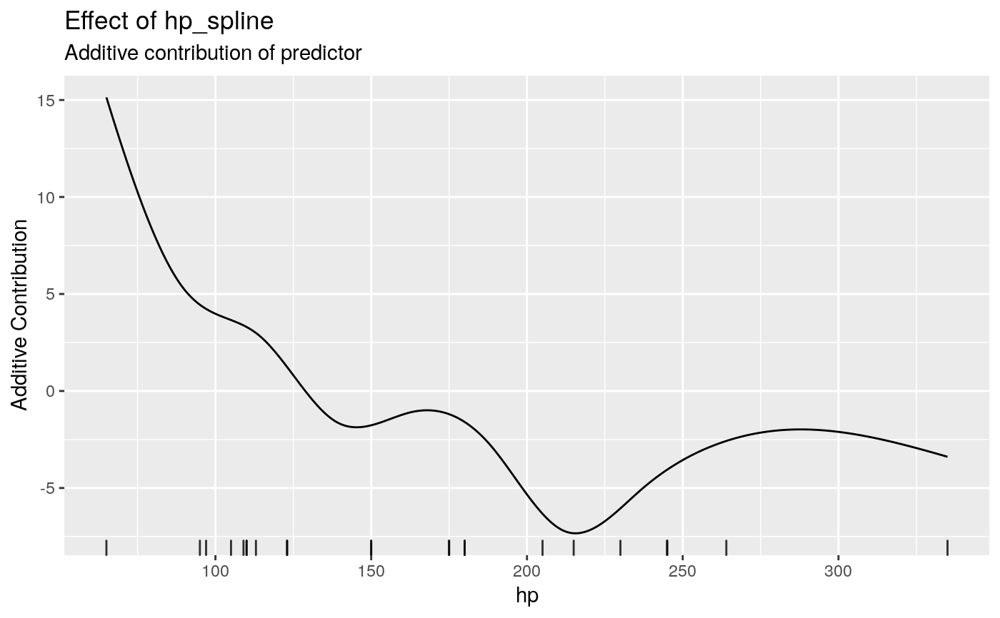
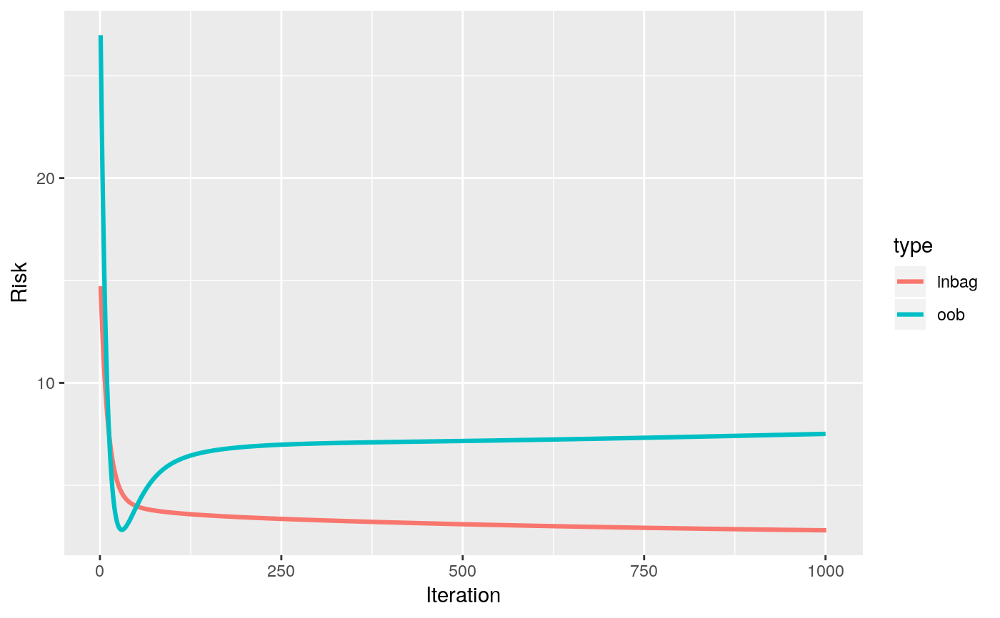

Compboost.RdCompboost wraps the S4 class system exposed by Rcpp to make defining
objects, adding objects, the training, calculating predictions, and plotting much easier.
As already mentioned, the Compboost R6 class is just a wrapper and compatible
with the most S4 classes.
R6Class object.
cboost = Compboost$new(data, target, optimizer = OptimizerCoordinateDescent$new(), loss,
learning_rate = 0.05, oob_fraction)
cboost$addLogger(logger, use_as_stopper = FALSE, logger_id, ...)
cbboost$addBaselearner(features, id, bl_factory, data_source = InMemoryData,
data_target = InMemoryData, ...)
cbboost$train(iteration = 100, trace = -1)
cboost$getCurrentIteration()
cboost$predict(newdata = NULL)
cboost$getInbagRisk()
cboost$getSelectedBaselearner()
cboost$getEstimatedCoef()
cboost$plot(blearner_name = NULL, iters = NULL, from = NULL, to = NULL, length_out = 1000)
cboost$getBaselearnerNames()
cboost$prepareData(newdata)
cboost$getLoggerData()
cboost$calculateFeatureImportance(num_feats = NULL)
cboost$plotFeatureImportance(num_feats = NULL)
cboost$plotInbagVsOobRisk()
For Compboost$new():
data[data.frame]
A data frame containing the data.
target[character(1)]
Character value containing the target variable. Note that the loss must match the
data type of the target.
optimizer[S4 Optimizer]
An initialized S4 Optimizer object exposed by Rcpp (e.g. OptimizerCoordinateDescent$new())
to select features at each iteration.
loss[S4 Loss]
Initialized S4 Loss object exposed by Rcpp that is used to calculate the risk and pseudo
residuals (e.g. LossQuadratic$new()).
learning.rage[numeric(1)]
Learning rate to shrink the parameter in each step.
oob_fraction[numeric(1)]
Fraction of how much data are used to track the out of bag risk.
For cboost$addLogger():
logger[S4 Logger]
Uninitialized S4 Logger class object that is registered in the model.
See the details for possible choices.
use_as_stopper[logical(1)]
Logical value indicating whether the new logger should also be used as stopper
(early stopping). Default value is FALSE.
logger_id[character(1)]
Id of the new logger. This is necessary to, for example, register multiple risk logger.
...
Further arguments passed to the constructor of the S4 Logger class specified in
logger. For possible arguments see details or the help pages (e.g. ?LoggerIteration).
For cboost$addBaselearner():
features[character()]
Vector of column names which are used as input data matrix for a single base-learner. Note that not
every base-learner supports the use of multiple features (e.g. the spline base-learner does not).
id[character(1)]
Id of the base-learners. This is necessary since it is possible to define multiple learners with the same underlying data.
bl_factory[S4 Factory]
Uninitialized base-learner factory given as S4 Factory class. See the details
for possible choices.
data_source[S4 Data]
Data source object. At the moment just in memory is supported.
data_target[S4 Data]
Data target object. At the moment just in memory is supported.
...
Further arguments passed to the constructor of the S4 Factory class specified in
bl_factory. For possible arguments see the help pages (e.g. ?BaselearnerPSplineFactory)
of the S4 classes.
For cboost$train():
iteration[integer(1)]
Number of iterations that are trained. If the model is already trained the model is set to the given number
by goint back through the already trained base-learners or training new ones. Note: This function defines an
iteration logger with the id _iterations which is then used as stopper.
trace[integer(1)]
Integer indicating how often a trace should be printed. Specifying trace = 10, then every
10th iteration is printed. If no trace should be printed set trace = 0. Default is
-1 which means that in total 40 iterations are printed.
For cboost$predict():
newdata[data.frame()]
Data to predict on. If newdata equals NULL predictions on the training data are returned.
For cboost$plot():
blearner_name[character(1)]
Character name of the base-learner to plot the additional contribution to the response.
iters[integer()]
Integer vector containing the iterations the user wants to illustrate.
from[numeric(1)]
Lower bound for plotting (should be smaller than to).
to[numeric(1)]
Upper bound for plotting (should be greater than from).
length_out[integer(1)]
Number of equidistant points between from and to used for plotting.
Loss
Available choices for the loss are:
LossQuadratic (Regression)
LossAbsolute (Regression)
LossBinomial (Binary Classification)
LossCustom (Custom)
(For each loss take also a look at the help pages (e.g. ?LossBinomial) and the
C++ documentation for details)
Logger
Available choices for the logger are:
LoggerIteration: Logs the current iteration. Additional arguments:
max_iterations [integer(1)]Maximal number of iterations.
LoggerTime: Logs the elapsed time. Additional arguments:
max_time [integer(1)]Maximal time for the computation.
time_unit [character(1)]Character to specify the time unit. Possible choices are minutes, seconds, or microseconds.
LoggerInbagRisk:
used_loss [S4 Loss]Loss as initialized S4 Loss which is used to calculate the empirical risk. See the
details for possible choices.
eps_for_break [numeric(1)]This argument is used if the logger is also used as stopper. If the relative improvement of the logged inbag risk falls below this boundary, then the stopper breaks the algorithm.
LoggerOobRisk:
used_loss [S4 Loss]Loss as initialized S4 Loss which is used to calculate the empirical risk. See the
details for possible choices.
eps_for_break [numeric(1)]This argument is used if the logger is also used as stopper. If the relative improvement of the logged inbag risk falls above this boundary the stopper breaks the algorithm.
oob_data [list]A list which contains data source objects which corresponds to the source data of each registered factory. The source data objects should contain the out of bag data. This data is then used to calculate the new predictions in each iteration.
oob_response [vector]Vector which contains the response for the out of bag data given within oob_data.
Note:
Even if you do not use the logger as stopper you have to define the arguments such as max_time.
We are aware of that the style guide here is not consistent with the R6 arguments. Nevertheless, using
_ as word separator is due to the used argument names within C++.
data [data.frame]Data used for training the algorithm.
data_oob [data.frame]Data used for out of bag tracking.
oob_fraction [numeric(1)]Fraction of how much data are used to track the out of bag risk.
response [vector]Response vector.
target [character(1)]Name of the target variable
id [character(1)]Name of the given dataset.
optimizer [S4 Optimizer]Optimizer used within the fitting process.
loss [S4 Loss]Loss used to calculate pseudo residuals and empirical risk.
learning_rate [numeric(1)]Learning rate used to shrink the estimated parameter in each iteration.
model [S4 Compboost_internal]S4 Compboost_internal class object from that the main operations are called.
bl_factory_list [S4 FactoryList]List of all registered factories represented as S4 FactoryList class.
positive_category [character(1)]Character containing the name of the positive class in the case of (binary) classification.
stop_if_all_stoppers_fulfilled [logical(1)]Logical indicating whether all stopper should be used simultaneously or if it is sufficient to just use the first stopper to stop the algorithm.
addLoggermethod to add a logger to the algorithm (Note: This is just possible before the training).
addBaselearnermethod to add a new base-learner to the algorithm (Note: This is just possible before the training).
getCurrentIterationmethod to get the current iteration on which the algorithm is set.
trainmethod to train the algorithm.
predictmethod to predict on a trained object.
getSelectedBaselearnermethod to get a character vector of selected base-learner.
getEstimatedCoefmethod to get a list of estimated coefficient of each selected base-learner.
plotmethod to plot individual feature effects.
getBaselearnerNamesmethod to get the names of the registered factories.
prepareDatamethod to prepare data to track the out of bag risk of an arbitrary loss/performance function.
getLoggerDatamethod to the the logged data from all registered logger.
calculateFeatureImportancemethod to calculate feature importance.
plotFeatureImportancemethod to plot the feature importance calculated by calulateFeatureImportance.
plotInbagVsOobRiskmethod to plot the inbag vs the out of bag behavior. This is just applicable if a logger with name oob_logger was registered. This is automatically done if the oob_fraction is set.
cboost = Compboost$new(mtcars, "mpg", loss = LossQuadratic$new(), oob_fraction = 0.3) cboost$addBaselearner("hp", "spline", BaselearnerPSpline, degree = 3, n.knots = 10, penalty = 2, differences = 2)#> Warning: Unused arguments "n.knots" in list.cboost$train(1000)#> Warning: New data for 'hp' contains values that are out of range. Values smaller than 65.000000 are set to 65.000000.#> 1/1000 risk = 14 oob_risk = 27#> Warning: New data for 'hp' contains values that are out of range. Values smaller than 65.000000 are set to 65.000000.#> Warning: New data for 'hp' contains values that are out of range. Values smaller than 65.000000 are set to 65.000000.#> Warning: New data for 'hp' contains values that are out of range. Values smaller than 65.000000 are set to 65.000000.#> Warning: New data for 'hp' contains values that are out of range. Values smaller than 65.000000 are set to 65.000000.#> Warning: New data for 'hp' contains values that are out of range. Values smaller than 65.000000 are set to 65.000000.#> Warning: New data for 'hp' contains values that are out of range. Values smaller than 65.000000 are set to 65.000000.#> Warning: New data for 'hp' contains values that are out of range. Values smaller than 65.000000 are set to 65.000000.#> Warning: New data for 'hp' contains values that are out of range. Values smaller than 65.000000 are set to 65.000000.#> Warning: New data for 'hp' contains values that are out of range. Values smaller than 65.000000 are set to 65.000000.#> Warning: New data for 'hp' contains values that are out of range. Values smaller than 65.000000 are set to 65.000000.#> Warning: New data for 'hp' contains values that are out of range. Values smaller than 65.000000 are set to 65.000000.#> Warning: New data for 'hp' contains values that are out of range. Values smaller than 65.000000 are set to 65.000000.#> Warning: New data for 'hp' contains values that are out of range. Values smaller than 65.000000 are set to 65.000000.#> Warning: New data for 'hp' contains values that are out of range. Values smaller than 65.000000 are set to 65.000000.#> Warning: New data for 'hp' contains values that are out of range. Values smaller than 65.000000 are set to 65.000000.#> Warning: New data for 'hp' contains values that are out of range. Values smaller than 65.000000 are set to 65.000000.#> Warning: New data for 'hp' contains values that are out of range. Values smaller than 65.000000 are set to 65.000000.#> Warning: New data for 'hp' contains values that are out of range. Values smaller than 65.000000 are set to 65.000000.#> Warning: New data for 'hp' contains values that are out of range. Values smaller than 65.000000 are set to 65.000000.#> Warning: New data for 'hp' contains values that are out of range. Values smaller than 65.000000 are set to 65.000000.#> Warning: New data for 'hp' contains values that are out of range. Values smaller than 65.000000 are set to 65.000000.#> Warning: New data for 'hp' contains values that are out of range. Values smaller than 65.000000 are set to 65.000000.#> Warning: New data for 'hp' contains values that are out of range. Values smaller than 65.000000 are set to 65.000000.#> Warning: New data for 'hp' contains values that are out of range. Values smaller than 65.000000 are set to 65.000000.#> 25/1000 risk = 4.2 oob_risk = 2.9#> Warning: New data for 'hp' contains values that are out of range. Values smaller than 65.000000 are set to 65.000000.#> Warning: New data for 'hp' contains values that are out of range. Values smaller than 65.000000 are set to 65.000000.#> Warning: New data for 'hp' contains values that are out of range. Values smaller than 65.000000 are set to 65.000000.#> Warning: New data for 'hp' contains values that are out of range. Values smaller than 65.000000 are set to 65.000000.#> Warning: New data for 'hp' contains values that are out of range. Values smaller than 65.000000 are set to 65.000000.#> Warning: New data for 'hp' contains values that are out of range. Values smaller than 65.000000 are set to 65.000000.#> Warning: New data for 'hp' contains values that are out of range. Values smaller than 65.000000 are set to 65.000000.#> Warning: New data for 'hp' contains values that are out of range. Values smaller than 65.000000 are set to 65.000000.#> Warning: New data for 'hp' contains values that are out of range. Values smaller than 65.000000 are set to 65.000000.#> Warning: New data for 'hp' contains values that are out of range. Values smaller than 65.000000 are set to 65.000000.#> Warning: New data for 'hp' contains values that are out of range. Values smaller than 65.000000 are set to 65.000000.#> Warning: New data for 'hp' contains values that are out of range. Values smaller than 65.000000 are set to 65.000000.#> Warning: New data for 'hp' contains values that are out of range. Values smaller than 65.000000 are set to 65.000000.#> Warning: New data for 'hp' contains values that are out of range. Values smaller than 65.000000 are set to 65.000000.#> Warning: New data for 'hp' contains values that are out of range. Values smaller than 65.000000 are set to 65.000000.#> Warning: New data for 'hp' contains values that are out of range. Values smaller than 65.000000 are set to 65.000000.#> Warning: New data for 'hp' contains values that are out of range. Values smaller than 65.000000 are set to 65.000000.#> Warning: New data for 'hp' contains values that are out of range. Values smaller than 65.000000 are set to 65.000000.#> Warning: New data for 'hp' contains values that are out of range. Values smaller than 65.000000 are set to 65.000000.#> Warning: New data for 'hp' contains values that are out of range. Values smaller than 65.000000 are set to 65.000000.#> Warning: New data for 'hp' contains values that are out of range. Values smaller than 65.000000 are set to 65.000000.#> Warning: New data for 'hp' contains values that are out of range. Values smaller than 65.000000 are set to 65.000000.#> Warning: New data for 'hp' contains values that are out of range. Values smaller than 65.000000 are set to 65.000000.#> Warning: New data for 'hp' contains values that are out of range. Values smaller than 65.000000 are set to 65.000000.#> Warning: New data for 'hp' contains values that are out of range. Values smaller than 65.000000 are set to 65.000000.#> 50/1000 risk = 3.1 oob_risk = 5#> Warning: New data for 'hp' contains values that are out of range. Values smaller than 65.000000 are set to 65.000000.#> Warning: New data for 'hp' contains values that are out of range. Values smaller than 65.000000 are set to 65.000000.#> Warning: New data for 'hp' contains values that are out of range. Values smaller than 65.000000 are set to 65.000000.#> Warning: New data for 'hp' contains values that are out of range. Values smaller than 65.000000 are set to 65.000000.#> Warning: New data for 'hp' contains values that are out of range. Values smaller than 65.000000 are set to 65.000000.#> Warning: New data for 'hp' contains values that are out of range. Values smaller than 65.000000 are set to 65.000000.#> Warning: New data for 'hp' contains values that are out of range. Values smaller than 65.000000 are set to 65.000000.#> Warning: New data for 'hp' contains values that are out of range. Values smaller than 65.000000 are set to 65.000000.#> Warning: New data for 'hp' contains values that are out of range. Values smaller than 65.000000 are set to 65.000000.#> Warning: New data for 'hp' contains values that are out of range. Values smaller than 65.000000 are set to 65.000000.#> Warning: New data for 'hp' contains values that are out of range. Values smaller than 65.000000 are set to 65.000000.#> Warning: New data for 'hp' contains values that are out of range. Values smaller than 65.000000 are set to 65.000000.#> Warning: New data for 'hp' contains values that are out of range. Values smaller than 65.000000 are set to 65.000000.#> Warning: New data for 'hp' contains values that are out of range. Values smaller than 65.000000 are set to 65.000000.#> Warning: New data for 'hp' contains values that are out of range. Values smaller than 65.000000 are set to 65.000000.#> Warning: New data for 'hp' contains values that are out of range. Values smaller than 65.000000 are set to 65.000000.#> Warning: New data for 'hp' contains values that are out of range. Values smaller than 65.000000 are set to 65.000000.#> Warning: New data for 'hp' contains values that are out of range. Values smaller than 65.000000 are set to 65.000000.#> Warning: New data for 'hp' contains values that are out of range. Values smaller than 65.000000 are set to 65.000000.#> Warning: New data for 'hp' contains values that are out of range. Values smaller than 65.000000 are set to 65.000000.#> Warning: New data for 'hp' contains values that are out of range. Values smaller than 65.000000 are set to 65.000000.#> Warning: New data for 'hp' contains values that are out of range. Values smaller than 65.000000 are set to 65.000000.#> Warning: New data for 'hp' contains values that are out of range. Values smaller than 65.000000 are set to 65.000000.#> Warning: New data for 'hp' contains values that are out of range. Values smaller than 65.000000 are set to 65.000000.#> Warning: New data for 'hp' contains values that are out of range. Values smaller than 65.000000 are set to 65.000000.#> 75/1000 risk = 2.8 oob_risk = 6.6#> Warning: New data for 'hp' contains values that are out of range. Values smaller than 65.000000 are set to 65.000000.#> Warning: New data for 'hp' contains values that are out of range. Values smaller than 65.000000 are set to 65.000000.#> Warning: New data for 'hp' contains values that are out of range. Values smaller than 65.000000 are set to 65.000000.#> Warning: New data for 'hp' contains values that are out of range. Values smaller than 65.000000 are set to 65.000000.#> Warning: New data for 'hp' contains values that are out of range. Values smaller than 65.000000 are set to 65.000000.#> Warning: New data for 'hp' contains values that are out of range. Values smaller than 65.000000 are set to 65.000000.#> Warning: New data for 'hp' contains values that are out of range. Values smaller than 65.000000 are set to 65.000000.#> Warning: New data for 'hp' contains values that are out of range. Values smaller than 65.000000 are set to 65.000000.#> Warning: New data for 'hp' contains values that are out of range. Values smaller than 65.000000 are set to 65.000000.#> Warning: New data for 'hp' contains values that are out of range. Values smaller than 65.000000 are set to 65.000000.#> Warning: New data for 'hp' contains values that are out of range. Values smaller than 65.000000 are set to 65.000000.#> Warning: New data for 'hp' contains values that are out of range. Values smaller than 65.000000 are set to 65.000000.#> Warning: New data for 'hp' contains values that are out of range. Values smaller than 65.000000 are set to 65.000000.#> Warning: New data for 'hp' contains values that are out of range. Values smaller than 65.000000 are set to 65.000000.#> Warning: New data for 'hp' contains values that are out of range. Values smaller than 65.000000 are set to 65.000000.#> Warning: New data for 'hp' contains values that are out of range. Values smaller than 65.000000 are set to 65.000000.#> Warning: New data for 'hp' contains values that are out of range. Values smaller than 65.000000 are set to 65.000000.#> Warning: New data for 'hp' contains values that are out of range. Values smaller than 65.000000 are set to 65.000000.#> Warning: New data for 'hp' contains values that are out of range. Values smaller than 65.000000 are set to 65.000000.#> Warning: New data for 'hp' contains values that are out of range. Values smaller than 65.000000 are set to 65.000000.#> Warning: New data for 'hp' contains values that are out of range. Values smaller than 65.000000 are set to 65.000000.#> Warning: New data for 'hp' contains values that are out of range. Values smaller than 65.000000 are set to 65.000000.#> Warning: New data for 'hp' contains values that are out of range. Values smaller than 65.000000 are set to 65.000000.#> Warning: New data for 'hp' contains values that are out of range. Values smaller than 65.000000 are set to 65.000000.#> Warning: New data for 'hp' contains values that are out of range. Values smaller than 65.000000 are set to 65.000000.#> 100/1000 risk = 2.7 oob_risk = 7.3#> Warning: New data for 'hp' contains values that are out of range. Values smaller than 65.000000 are set to 65.000000.#> Warning: New data for 'hp' contains values that are out of range. Values smaller than 65.000000 are set to 65.000000.#> Warning: New data for 'hp' contains values that are out of range. Values smaller than 65.000000 are set to 65.000000.#> Warning: New data for 'hp' contains values that are out of range. Values smaller than 65.000000 are set to 65.000000.#> Warning: New data for 'hp' contains values that are out of range. Values smaller than 65.000000 are set to 65.000000.#> Warning: New data for 'hp' contains values that are out of range. Values smaller than 65.000000 are set to 65.000000.#> Warning: New data for 'hp' contains values that are out of range. Values smaller than 65.000000 are set to 65.000000.#> Warning: New data for 'hp' contains values that are out of range. Values smaller than 65.000000 are set to 65.000000.#> Warning: New data for 'hp' contains values that are out of range. Values smaller than 65.000000 are set to 65.000000.#> Warning: New data for 'hp' contains values that are out of range. Values smaller than 65.000000 are set to 65.000000.#> Warning: New data for 'hp' contains values that are out of range. Values smaller than 65.000000 are set to 65.000000.#> Warning: New data for 'hp' contains values that are out of range. Values smaller than 65.000000 are set to 65.000000.#> Warning: New data for 'hp' contains values that are out of range. Values smaller than 65.000000 are set to 65.000000.#> Warning: New data for 'hp' contains values that are out of range. Values smaller than 65.000000 are set to 65.000000.#> Warning: New data for 'hp' contains values that are out of range. Values smaller than 65.000000 are set to 65.000000.#> Warning: New data for 'hp' contains values that are out of range. Values smaller than 65.000000 are set to 65.000000.#> Warning: New data for 'hp' contains values that are out of range. Values smaller than 65.000000 are set to 65.000000.#> Warning: New data for 'hp' contains values that are out of range. Values smaller than 65.000000 are set to 65.000000.#> Warning: New data for 'hp' contains values that are out of range. Values smaller than 65.000000 are set to 65.000000.#> Warning: New data for 'hp' contains values that are out of range. Values smaller than 65.000000 are set to 65.000000.#> Warning: New data for 'hp' contains values that are out of range. Values smaller than 65.000000 are set to 65.000000.#> Warning: New data for 'hp' contains values that are out of range. Values smaller than 65.000000 are set to 65.000000.#> Warning: New data for 'hp' contains values that are out of range. Values smaller than 65.000000 are set to 65.000000.#> Warning: New data for 'hp' contains values that are out of range. Values smaller than 65.000000 are set to 65.000000.#> Warning: New data for 'hp' contains values that are out of range. Values smaller than 65.000000 are set to 65.000000.#> 125/1000 risk = 2.6 oob_risk = 7.6#> Warning: New data for 'hp' contains values that are out of range. Values smaller than 65.000000 are set to 65.000000.#> Warning: New data for 'hp' contains values that are out of range. Values smaller than 65.000000 are set to 65.000000.#> Warning: New data for 'hp' contains values that are out of range. Values smaller than 65.000000 are set to 65.000000.#> Warning: New data for 'hp' contains values that are out of range. Values smaller than 65.000000 are set to 65.000000.#> Warning: New data for 'hp' contains values that are out of range. Values smaller than 65.000000 are set to 65.000000.#> Warning: New data for 'hp' contains values that are out of range. Values smaller than 65.000000 are set to 65.000000.#> Warning: New data for 'hp' contains values that are out of range. Values smaller than 65.000000 are set to 65.000000.#> Warning: New data for 'hp' contains values that are out of range. Values smaller than 65.000000 are set to 65.000000.#> Warning: New data for 'hp' contains values that are out of range. Values smaller than 65.000000 are set to 65.000000.#> Warning: New data for 'hp' contains values that are out of range. Values smaller than 65.000000 are set to 65.000000.#> Warning: New data for 'hp' contains values that are out of range. Values smaller than 65.000000 are set to 65.000000.#> Warning: New data for 'hp' contains values that are out of range. Values smaller than 65.000000 are set to 65.000000.#> Warning: New data for 'hp' contains values that are out of range. Values smaller than 65.000000 are set to 65.000000.#> Warning: New data for 'hp' contains values that are out of range. Values smaller than 65.000000 are set to 65.000000.#> Warning: New data for 'hp' contains values that are out of range. Values smaller than 65.000000 are set to 65.000000.#> Warning: New data for 'hp' contains values that are out of range. Values smaller than 65.000000 are set to 65.000000.#> Warning: New data for 'hp' contains values that are out of range. Values smaller than 65.000000 are set to 65.000000.#> Warning: New data for 'hp' contains values that are out of range. Values smaller than 65.000000 are set to 65.000000.#> Warning: New data for 'hp' contains values that are out of range. Values smaller than 65.000000 are set to 65.000000.#> Warning: New data for 'hp' contains values that are out of range. Values smaller than 65.000000 are set to 65.000000.#> Warning: New data for 'hp' contains values that are out of range. Values smaller than 65.000000 are set to 65.000000.#> Warning: New data for 'hp' contains values that are out of range. Values smaller than 65.000000 are set to 65.000000.#> Warning: New data for 'hp' contains values that are out of range. Values smaller than 65.000000 are set to 65.000000.#> Warning: New data for 'hp' contains values that are out of range. Values smaller than 65.000000 are set to 65.000000.#> Warning: New data for 'hp' contains values that are out of range. Values smaller than 65.000000 are set to 65.000000.#> 150/1000 risk = 2.5 oob_risk = 7.8#> Warning: New data for 'hp' contains values that are out of range. Values smaller than 65.000000 are set to 65.000000.#> Warning: New data for 'hp' contains values that are out of range. Values smaller than 65.000000 are set to 65.000000.#> Warning: New data for 'hp' contains values that are out of range. Values smaller than 65.000000 are set to 65.000000.#> Warning: New data for 'hp' contains values that are out of range. Values smaller than 65.000000 are set to 65.000000.#> Warning: New data for 'hp' contains values that are out of range. Values smaller than 65.000000 are set to 65.000000.#> Warning: New data for 'hp' contains values that are out of range. Values smaller than 65.000000 are set to 65.000000.#> Warning: New data for 'hp' contains values that are out of range. Values smaller than 65.000000 are set to 65.000000.#> Warning: New data for 'hp' contains values that are out of range. Values smaller than 65.000000 are set to 65.000000.#> Warning: New data for 'hp' contains values that are out of range. Values smaller than 65.000000 are set to 65.000000.#> Warning: New data for 'hp' contains values that are out of range. Values smaller than 65.000000 are set to 65.000000.#> Warning: New data for 'hp' contains values that are out of range. Values smaller than 65.000000 are set to 65.000000.#> Warning: New data for 'hp' contains values that are out of range. Values smaller than 65.000000 are set to 65.000000.#> Warning: New data for 'hp' contains values that are out of range. Values smaller than 65.000000 are set to 65.000000.#> Warning: New data for 'hp' contains values that are out of range. Values smaller than 65.000000 are set to 65.000000.#> Warning: New data for 'hp' contains values that are out of range. Values smaller than 65.000000 are set to 65.000000.#> Warning: New data for 'hp' contains values that are out of range. Values smaller than 65.000000 are set to 65.000000.#> Warning: New data for 'hp' contains values that are out of range. Values smaller than 65.000000 are set to 65.000000.#> Warning: New data for 'hp' contains values that are out of range. Values smaller than 65.000000 are set to 65.000000.#> Warning: New data for 'hp' contains values that are out of range. Values smaller than 65.000000 are set to 65.000000.#> Warning: New data for 'hp' contains values that are out of range. Values smaller than 65.000000 are set to 65.000000.#> Warning: New data for 'hp' contains values that are out of range. Values smaller than 65.000000 are set to 65.000000.#> Warning: New data for 'hp' contains values that are out of range. Values smaller than 65.000000 are set to 65.000000.#> Warning: New data for 'hp' contains values that are out of range. Values smaller than 65.000000 are set to 65.000000.#> Warning: New data for 'hp' contains values that are out of range. Values smaller than 65.000000 are set to 65.000000.#> Warning: New data for 'hp' contains values that are out of range. Values smaller than 65.000000 are set to 65.000000.#> 175/1000 risk = 2.4 oob_risk = 8#> Warning: New data for 'hp' contains values that are out of range. Values smaller than 65.000000 are set to 65.000000.#> Warning: New data for 'hp' contains values that are out of range. Values smaller than 65.000000 are set to 65.000000.#> Warning: New data for 'hp' contains values that are out of range. Values smaller than 65.000000 are set to 65.000000.#> Warning: New data for 'hp' contains values that are out of range. Values smaller than 65.000000 are set to 65.000000.#> Warning: New data for 'hp' contains values that are out of range. Values smaller than 65.000000 are set to 65.000000.#> Warning: New data for 'hp' contains values that are out of range. Values smaller than 65.000000 are set to 65.000000.#> Warning: New data for 'hp' contains values that are out of range. Values smaller than 65.000000 are set to 65.000000.#> Warning: New data for 'hp' contains values that are out of range. Values smaller than 65.000000 are set to 65.000000.#> Warning: New data for 'hp' contains values that are out of range. Values smaller than 65.000000 are set to 65.000000.#> Warning: New data for 'hp' contains values that are out of range. Values smaller than 65.000000 are set to 65.000000.#> Warning: New data for 'hp' contains values that are out of range. Values smaller than 65.000000 are set to 65.000000.#> Warning: New data for 'hp' contains values that are out of range. Values smaller than 65.000000 are set to 65.000000.#> Warning: New data for 'hp' contains values that are out of range. Values smaller than 65.000000 are set to 65.000000.#> Warning: New data for 'hp' contains values that are out of range. Values smaller than 65.000000 are set to 65.000000.#> Warning: New data for 'hp' contains values that are out of range. Values smaller than 65.000000 are set to 65.000000.#> Warning: New data for 'hp' contains values that are out of range. Values smaller than 65.000000 are set to 65.000000.#> Warning: New data for 'hp' contains values that are out of range. Values smaller than 65.000000 are set to 65.000000.#> Warning: New data for 'hp' contains values that are out of range. Values smaller than 65.000000 are set to 65.000000.#> Warning: New data for 'hp' contains values that are out of range. Values smaller than 65.000000 are set to 65.000000.#> Warning: New data for 'hp' contains values that are out of range. Values smaller than 65.000000 are set to 65.000000.#> Warning: New data for 'hp' contains values that are out of range. Values smaller than 65.000000 are set to 65.000000.#> Warning: New data for 'hp' contains values that are out of range. Values smaller than 65.000000 are set to 65.000000.#> Warning: New data for 'hp' contains values that are out of range. Values smaller than 65.000000 are set to 65.000000.#> Warning: New data for 'hp' contains values that are out of range. Values smaller than 65.000000 are set to 65.000000.#> Warning: New data for 'hp' contains values that are out of range. Values smaller than 65.000000 are set to 65.000000.#> 200/1000 risk = 2.4 oob_risk = 8.1#> Warning: New data for 'hp' contains values that are out of range. Values smaller than 65.000000 are set to 65.000000.#> Warning: New data for 'hp' contains values that are out of range. Values smaller than 65.000000 are set to 65.000000.#> Warning: New data for 'hp' contains values that are out of range. Values smaller than 65.000000 are set to 65.000000.#> Warning: New data for 'hp' contains values that are out of range. Values smaller than 65.000000 are set to 65.000000.#> Warning: New data for 'hp' contains values that are out of range. Values smaller than 65.000000 are set to 65.000000.#> Warning: New data for 'hp' contains values that are out of range. Values smaller than 65.000000 are set to 65.000000.#> Warning: New data for 'hp' contains values that are out of range. Values smaller than 65.000000 are set to 65.000000.#> Warning: New data for 'hp' contains values that are out of range. Values smaller than 65.000000 are set to 65.000000.#> Warning: New data for 'hp' contains values that are out of range. Values smaller than 65.000000 are set to 65.000000.#> Warning: New data for 'hp' contains values that are out of range. Values smaller than 65.000000 are set to 65.000000.#> Warning: New data for 'hp' contains values that are out of range. Values smaller than 65.000000 are set to 65.000000.#> Warning: New data for 'hp' contains values that are out of range. Values smaller than 65.000000 are set to 65.000000.#> Warning: New data for 'hp' contains values that are out of range. Values smaller than 65.000000 are set to 65.000000.#> Warning: New data for 'hp' contains values that are out of range. Values smaller than 65.000000 are set to 65.000000.#> Warning: New data for 'hp' contains values that are out of range. Values smaller than 65.000000 are set to 65.000000.#> Warning: New data for 'hp' contains values that are out of range. Values smaller than 65.000000 are set to 65.000000.#> Warning: New data for 'hp' contains values that are out of range. Values smaller than 65.000000 are set to 65.000000.#> Warning: New data for 'hp' contains values that are out of range. Values smaller than 65.000000 are set to 65.000000.#> Warning: New data for 'hp' contains values that are out of range. Values smaller than 65.000000 are set to 65.000000.#> Warning: New data for 'hp' contains values that are out of range. Values smaller than 65.000000 are set to 65.000000.#> Warning: New data for 'hp' contains values that are out of range. Values smaller than 65.000000 are set to 65.000000.#> Warning: New data for 'hp' contains values that are out of range. Values smaller than 65.000000 are set to 65.000000.#> Warning: New data for 'hp' contains values that are out of range. Values smaller than 65.000000 are set to 65.000000.#> Warning: New data for 'hp' contains values that are out of range. Values smaller than 65.000000 are set to 65.000000.#> Warning: New data for 'hp' contains values that are out of range. Values smaller than 65.000000 are set to 65.000000.#> 225/1000 risk = 2.3 oob_risk = 8.2#> Warning: New data for 'hp' contains values that are out of range. Values smaller than 65.000000 are set to 65.000000.#> Warning: New data for 'hp' contains values that are out of range. Values smaller than 65.000000 are set to 65.000000.#> Warning: New data for 'hp' contains values that are out of range. Values smaller than 65.000000 are set to 65.000000.#> Warning: New data for 'hp' contains values that are out of range. Values smaller than 65.000000 are set to 65.000000.#> Warning: New data for 'hp' contains values that are out of range. Values smaller than 65.000000 are set to 65.000000.#> Warning: New data for 'hp' contains values that are out of range. Values smaller than 65.000000 are set to 65.000000.#> Warning: New data for 'hp' contains values that are out of range. Values smaller than 65.000000 are set to 65.000000.#> Warning: New data for 'hp' contains values that are out of range. Values smaller than 65.000000 are set to 65.000000.#> Warning: New data for 'hp' contains values that are out of range. Values smaller than 65.000000 are set to 65.000000.#> Warning: New data for 'hp' contains values that are out of range. Values smaller than 65.000000 are set to 65.000000.#> Warning: New data for 'hp' contains values that are out of range. Values smaller than 65.000000 are set to 65.000000.#> Warning: New data for 'hp' contains values that are out of range. Values smaller than 65.000000 are set to 65.000000.#> Warning: New data for 'hp' contains values that are out of range. Values smaller than 65.000000 are set to 65.000000.#> Warning: New data for 'hp' contains values that are out of range. Values smaller than 65.000000 are set to 65.000000.#> Warning: New data for 'hp' contains values that are out of range. Values smaller than 65.000000 are set to 65.000000.#> Warning: New data for 'hp' contains values that are out of range. Values smaller than 65.000000 are set to 65.000000.#> Warning: New data for 'hp' contains values that are out of range. Values smaller than 65.000000 are set to 65.000000.#> Warning: New data for 'hp' contains values that are out of range. Values smaller than 65.000000 are set to 65.000000.#> Warning: New data for 'hp' contains values that are out of range. Values smaller than 65.000000 are set to 65.000000.#> Warning: New data for 'hp' contains values that are out of range. Values smaller than 65.000000 are set to 65.000000.#> Warning: New data for 'hp' contains values that are out of range. Values smaller than 65.000000 are set to 65.000000.#> Warning: New data for 'hp' contains values that are out of range. Values smaller than 65.000000 are set to 65.000000.#> Warning: New data for 'hp' contains values that are out of range. Values smaller than 65.000000 are set to 65.000000.#> Warning: New data for 'hp' contains values that are out of range. Values smaller than 65.000000 are set to 65.000000.#> Warning: New data for 'hp' contains values that are out of range. Values smaller than 65.000000 are set to 65.000000.#> 250/1000 risk = 2.3 oob_risk = 8.3#> Warning: New data for 'hp' contains values that are out of range. Values smaller than 65.000000 are set to 65.000000.#> Warning: New data for 'hp' contains values that are out of range. Values smaller than 65.000000 are set to 65.000000.#> Warning: New data for 'hp' contains values that are out of range. Values smaller than 65.000000 are set to 65.000000.#> Warning: New data for 'hp' contains values that are out of range. Values smaller than 65.000000 are set to 65.000000.#> Warning: New data for 'hp' contains values that are out of range. Values smaller than 65.000000 are set to 65.000000.#> Warning: New data for 'hp' contains values that are out of range. Values smaller than 65.000000 are set to 65.000000.#> Warning: New data for 'hp' contains values that are out of range. Values smaller than 65.000000 are set to 65.000000.#> Warning: New data for 'hp' contains values that are out of range. Values smaller than 65.000000 are set to 65.000000.#> Warning: New data for 'hp' contains values that are out of range. Values smaller than 65.000000 are set to 65.000000.#> Warning: New data for 'hp' contains values that are out of range. Values smaller than 65.000000 are set to 65.000000.#> Warning: New data for 'hp' contains values that are out of range. Values smaller than 65.000000 are set to 65.000000.#> Warning: New data for 'hp' contains values that are out of range. Values smaller than 65.000000 are set to 65.000000.#> Warning: New data for 'hp' contains values that are out of range. Values smaller than 65.000000 are set to 65.000000.#> Warning: New data for 'hp' contains values that are out of range. Values smaller than 65.000000 are set to 65.000000.#> Warning: New data for 'hp' contains values that are out of range. Values smaller than 65.000000 are set to 65.000000.#> Warning: New data for 'hp' contains values that are out of range. Values smaller than 65.000000 are set to 65.000000.#> Warning: New data for 'hp' contains values that are out of range. Values smaller than 65.000000 are set to 65.000000.#> Warning: New data for 'hp' contains values that are out of range. Values smaller than 65.000000 are set to 65.000000.#> Warning: New data for 'hp' contains values that are out of range. Values smaller than 65.000000 are set to 65.000000.#> Warning: New data for 'hp' contains values that are out of range. Values smaller than 65.000000 are set to 65.000000.#> Warning: New data for 'hp' contains values that are out of range. Values smaller than 65.000000 are set to 65.000000.#> Warning: New data for 'hp' contains values that are out of range. Values smaller than 65.000000 are set to 65.000000.#> Warning: New data for 'hp' contains values that are out of range. Values smaller than 65.000000 are set to 65.000000.#> Warning: New data for 'hp' contains values that are out of range. Values smaller than 65.000000 are set to 65.000000.#> Warning: New data for 'hp' contains values that are out of range. Values smaller than 65.000000 are set to 65.000000.#> 275/1000 risk = 2.3 oob_risk = 8.4#> Warning: New data for 'hp' contains values that are out of range. Values smaller than 65.000000 are set to 65.000000.#> Warning: New data for 'hp' contains values that are out of range. Values smaller than 65.000000 are set to 65.000000.#> Warning: New data for 'hp' contains values that are out of range. Values smaller than 65.000000 are set to 65.000000.#> Warning: New data for 'hp' contains values that are out of range. Values smaller than 65.000000 are set to 65.000000.#> Warning: New data for 'hp' contains values that are out of range. Values smaller than 65.000000 are set to 65.000000.#> Warning: New data for 'hp' contains values that are out of range. Values smaller than 65.000000 are set to 65.000000.#> Warning: New data for 'hp' contains values that are out of range. Values smaller than 65.000000 are set to 65.000000.#> Warning: New data for 'hp' contains values that are out of range. Values smaller than 65.000000 are set to 65.000000.#> Warning: New data for 'hp' contains values that are out of range. Values smaller than 65.000000 are set to 65.000000.#> Warning: New data for 'hp' contains values that are out of range. Values smaller than 65.000000 are set to 65.000000.#> Warning: New data for 'hp' contains values that are out of range. Values smaller than 65.000000 are set to 65.000000.#> Warning: New data for 'hp' contains values that are out of range. Values smaller than 65.000000 are set to 65.000000.#> Warning: New data for 'hp' contains values that are out of range. Values smaller than 65.000000 are set to 65.000000.#> Warning: New data for 'hp' contains values that are out of range. Values smaller than 65.000000 are set to 65.000000.#> Warning: New data for 'hp' contains values that are out of range. Values smaller than 65.000000 are set to 65.000000.#> Warning: New data for 'hp' contains values that are out of range. Values smaller than 65.000000 are set to 65.000000.#> Warning: New data for 'hp' contains values that are out of range. Values smaller than 65.000000 are set to 65.000000.#> Warning: New data for 'hp' contains values that are out of range. Values smaller than 65.000000 are set to 65.000000.#> Warning: New data for 'hp' contains values that are out of range. Values smaller than 65.000000 are set to 65.000000.#> Warning: New data for 'hp' contains values that are out of range. Values smaller than 65.000000 are set to 65.000000.#> Warning: New data for 'hp' contains values that are out of range. Values smaller than 65.000000 are set to 65.000000.#> Warning: New data for 'hp' contains values that are out of range. Values smaller than 65.000000 are set to 65.000000.#> Warning: New data for 'hp' contains values that are out of range. Values smaller than 65.000000 are set to 65.000000.#> Warning: New data for 'hp' contains values that are out of range. Values smaller than 65.000000 are set to 65.000000.#> Warning: New data for 'hp' contains values that are out of range. Values smaller than 65.000000 are set to 65.000000.#> 300/1000 risk = 2.3 oob_risk = 8.4#> Warning: New data for 'hp' contains values that are out of range. Values smaller than 65.000000 are set to 65.000000.#> Warning: New data for 'hp' contains values that are out of range. Values smaller than 65.000000 are set to 65.000000.#> Warning: New data for 'hp' contains values that are out of range. Values smaller than 65.000000 are set to 65.000000.#> Warning: New data for 'hp' contains values that are out of range. Values smaller than 65.000000 are set to 65.000000.#> Warning: New data for 'hp' contains values that are out of range. Values smaller than 65.000000 are set to 65.000000.#> Warning: New data for 'hp' contains values that are out of range. Values smaller than 65.000000 are set to 65.000000.#> Warning: New data for 'hp' contains values that are out of range. Values smaller than 65.000000 are set to 65.000000.#> Warning: New data for 'hp' contains values that are out of range. Values smaller than 65.000000 are set to 65.000000.#> Warning: New data for 'hp' contains values that are out of range. Values smaller than 65.000000 are set to 65.000000.#> Warning: New data for 'hp' contains values that are out of range. Values smaller than 65.000000 are set to 65.000000.#> Warning: New data for 'hp' contains values that are out of range. Values smaller than 65.000000 are set to 65.000000.#> Warning: New data for 'hp' contains values that are out of range. Values smaller than 65.000000 are set to 65.000000.#> Warning: New data for 'hp' contains values that are out of range. Values smaller than 65.000000 are set to 65.000000.#> Warning: New data for 'hp' contains values that are out of range. Values smaller than 65.000000 are set to 65.000000.#> Warning: New data for 'hp' contains values that are out of range. Values smaller than 65.000000 are set to 65.000000.#> Warning: New data for 'hp' contains values that are out of range. Values smaller than 65.000000 are set to 65.000000.#> Warning: New data for 'hp' contains values that are out of range. Values smaller than 65.000000 are set to 65.000000.#> Warning: New data for 'hp' contains values that are out of range. Values smaller than 65.000000 are set to 65.000000.#> Warning: New data for 'hp' contains values that are out of range. Values smaller than 65.000000 are set to 65.000000.#> Warning: New data for 'hp' contains values that are out of range. Values smaller than 65.000000 are set to 65.000000.#> Warning: New data for 'hp' contains values that are out of range. Values smaller than 65.000000 are set to 65.000000.#> Warning: New data for 'hp' contains values that are out of range. Values smaller than 65.000000 are set to 65.000000.#> Warning: New data for 'hp' contains values that are out of range. Values smaller than 65.000000 are set to 65.000000.#> Warning: New data for 'hp' contains values that are out of range. Values smaller than 65.000000 are set to 65.000000.#> Warning: New data for 'hp' contains values that are out of range. Values smaller than 65.000000 are set to 65.000000.#> 325/1000 risk = 2.2 oob_risk = 8.5#> Warning: New data for 'hp' contains values that are out of range. Values smaller than 65.000000 are set to 65.000000.#> Warning: New data for 'hp' contains values that are out of range. Values smaller than 65.000000 are set to 65.000000.#> Warning: New data for 'hp' contains values that are out of range. Values smaller than 65.000000 are set to 65.000000.#> Warning: New data for 'hp' contains values that are out of range. Values smaller than 65.000000 are set to 65.000000.#> Warning: New data for 'hp' contains values that are out of range. Values smaller than 65.000000 are set to 65.000000.#> Warning: New data for 'hp' contains values that are out of range. Values smaller than 65.000000 are set to 65.000000.#> Warning: New data for 'hp' contains values that are out of range. Values smaller than 65.000000 are set to 65.000000.#> Warning: New data for 'hp' contains values that are out of range. Values smaller than 65.000000 are set to 65.000000.#> Warning: New data for 'hp' contains values that are out of range. Values smaller than 65.000000 are set to 65.000000.#> Warning: New data for 'hp' contains values that are out of range. Values smaller than 65.000000 are set to 65.000000.#> Warning: New data for 'hp' contains values that are out of range. Values smaller than 65.000000 are set to 65.000000.#> Warning: New data for 'hp' contains values that are out of range. Values smaller than 65.000000 are set to 65.000000.#> Warning: New data for 'hp' contains values that are out of range. Values smaller than 65.000000 are set to 65.000000.#> Warning: New data for 'hp' contains values that are out of range. Values smaller than 65.000000 are set to 65.000000.#> Warning: New data for 'hp' contains values that are out of range. Values smaller than 65.000000 are set to 65.000000.#> Warning: New data for 'hp' contains values that are out of range. Values smaller than 65.000000 are set to 65.000000.#> Warning: New data for 'hp' contains values that are out of range. Values smaller than 65.000000 are set to 65.000000.#> Warning: New data for 'hp' contains values that are out of range. Values smaller than 65.000000 are set to 65.000000.#> Warning: New data for 'hp' contains values that are out of range. Values smaller than 65.000000 are set to 65.000000.#> Warning: New data for 'hp' contains values that are out of range. Values smaller than 65.000000 are set to 65.000000.#> Warning: New data for 'hp' contains values that are out of range. Values smaller than 65.000000 are set to 65.000000.#> Warning: New data for 'hp' contains values that are out of range. Values smaller than 65.000000 are set to 65.000000.#> Warning: New data for 'hp' contains values that are out of range. Values smaller than 65.000000 are set to 65.000000.#> Warning: New data for 'hp' contains values that are out of range. Values smaller than 65.000000 are set to 65.000000.#> Warning: New data for 'hp' contains values that are out of range. Values smaller than 65.000000 are set to 65.000000.#> 350/1000 risk = 2.2 oob_risk = 8.6#> Warning: New data for 'hp' contains values that are out of range. Values smaller than 65.000000 are set to 65.000000.#> Warning: New data for 'hp' contains values that are out of range. Values smaller than 65.000000 are set to 65.000000.#> Warning: New data for 'hp' contains values that are out of range. Values smaller than 65.000000 are set to 65.000000.#> Warning: New data for 'hp' contains values that are out of range. Values smaller than 65.000000 are set to 65.000000.#> Warning: New data for 'hp' contains values that are out of range. Values smaller than 65.000000 are set to 65.000000.#> Warning: New data for 'hp' contains values that are out of range. Values smaller than 65.000000 are set to 65.000000.#> Warning: New data for 'hp' contains values that are out of range. Values smaller than 65.000000 are set to 65.000000.#> Warning: New data for 'hp' contains values that are out of range. Values smaller than 65.000000 are set to 65.000000.#> Warning: New data for 'hp' contains values that are out of range. Values smaller than 65.000000 are set to 65.000000.#> Warning: New data for 'hp' contains values that are out of range. Values smaller than 65.000000 are set to 65.000000.#> Warning: New data for 'hp' contains values that are out of range. Values smaller than 65.000000 are set to 65.000000.#> Warning: New data for 'hp' contains values that are out of range. Values smaller than 65.000000 are set to 65.000000.#> Warning: New data for 'hp' contains values that are out of range. Values smaller than 65.000000 are set to 65.000000.#> Warning: New data for 'hp' contains values that are out of range. Values smaller than 65.000000 are set to 65.000000.#> Warning: New data for 'hp' contains values that are out of range. Values smaller than 65.000000 are set to 65.000000.#> Warning: New data for 'hp' contains values that are out of range. Values smaller than 65.000000 are set to 65.000000.#> Warning: New data for 'hp' contains values that are out of range. Values smaller than 65.000000 are set to 65.000000.#> Warning: New data for 'hp' contains values that are out of range. Values smaller than 65.000000 are set to 65.000000.#> Warning: New data for 'hp' contains values that are out of range. Values smaller than 65.000000 are set to 65.000000.#> Warning: New data for 'hp' contains values that are out of range. Values smaller than 65.000000 are set to 65.000000.#> Warning: New data for 'hp' contains values that are out of range. Values smaller than 65.000000 are set to 65.000000.#> Warning: New data for 'hp' contains values that are out of range. Values smaller than 65.000000 are set to 65.000000.#> Warning: New data for 'hp' contains values that are out of range. Values smaller than 65.000000 are set to 65.000000.#> Warning: New data for 'hp' contains values that are out of range. Values smaller than 65.000000 are set to 65.000000.#> Warning: New data for 'hp' contains values that are out of range. Values smaller than 65.000000 are set to 65.000000.#> 375/1000 risk = 2.2 oob_risk = 8.6#> Warning: New data for 'hp' contains values that are out of range. Values smaller than 65.000000 are set to 65.000000.#> Warning: New data for 'hp' contains values that are out of range. Values smaller than 65.000000 are set to 65.000000.#> Warning: New data for 'hp' contains values that are out of range. Values smaller than 65.000000 are set to 65.000000.#> Warning: New data for 'hp' contains values that are out of range. Values smaller than 65.000000 are set to 65.000000.#> Warning: New data for 'hp' contains values that are out of range. Values smaller than 65.000000 are set to 65.000000.#> Warning: New data for 'hp' contains values that are out of range. Values smaller than 65.000000 are set to 65.000000.#> Warning: New data for 'hp' contains values that are out of range. Values smaller than 65.000000 are set to 65.000000.#> Warning: New data for 'hp' contains values that are out of range. Values smaller than 65.000000 are set to 65.000000.#> Warning: New data for 'hp' contains values that are out of range. Values smaller than 65.000000 are set to 65.000000.#> Warning: New data for 'hp' contains values that are out of range. Values smaller than 65.000000 are set to 65.000000.#> Warning: New data for 'hp' contains values that are out of range. Values smaller than 65.000000 are set to 65.000000.#> Warning: New data for 'hp' contains values that are out of range. Values smaller than 65.000000 are set to 65.000000.#> Warning: New data for 'hp' contains values that are out of range. Values smaller than 65.000000 are set to 65.000000.#> Warning: New data for 'hp' contains values that are out of range. Values smaller than 65.000000 are set to 65.000000.#> Warning: New data for 'hp' contains values that are out of range. Values smaller than 65.000000 are set to 65.000000.#> Warning: New data for 'hp' contains values that are out of range. Values smaller than 65.000000 are set to 65.000000.#> Warning: New data for 'hp' contains values that are out of range. Values smaller than 65.000000 are set to 65.000000.#> Warning: New data for 'hp' contains values that are out of range. Values smaller than 65.000000 are set to 65.000000.#> Warning: New data for 'hp' contains values that are out of range. Values smaller than 65.000000 are set to 65.000000.#> Warning: New data for 'hp' contains values that are out of range. Values smaller than 65.000000 are set to 65.000000.#> Warning: New data for 'hp' contains values that are out of range. Values smaller than 65.000000 are set to 65.000000.#> Warning: New data for 'hp' contains values that are out of range. Values smaller than 65.000000 are set to 65.000000.#> Warning: New data for 'hp' contains values that are out of range. Values smaller than 65.000000 are set to 65.000000.#> Warning: New data for 'hp' contains values that are out of range. Values smaller than 65.000000 are set to 65.000000.#> Warning: New data for 'hp' contains values that are out of range. Values smaller than 65.000000 are set to 65.000000.#> 400/1000 risk = 2.2 oob_risk = 8.6#> Warning: New data for 'hp' contains values that are out of range. Values smaller than 65.000000 are set to 65.000000.#> Warning: New data for 'hp' contains values that are out of range. Values smaller than 65.000000 are set to 65.000000.#> Warning: New data for 'hp' contains values that are out of range. Values smaller than 65.000000 are set to 65.000000.#> Warning: New data for 'hp' contains values that are out of range. Values smaller than 65.000000 are set to 65.000000.#> Warning: New data for 'hp' contains values that are out of range. Values smaller than 65.000000 are set to 65.000000.#> Warning: New data for 'hp' contains values that are out of range. Values smaller than 65.000000 are set to 65.000000.#> Warning: New data for 'hp' contains values that are out of range. Values smaller than 65.000000 are set to 65.000000.#> Warning: New data for 'hp' contains values that are out of range. Values smaller than 65.000000 are set to 65.000000.#> Warning: New data for 'hp' contains values that are out of range. Values smaller than 65.000000 are set to 65.000000.#> Warning: New data for 'hp' contains values that are out of range. Values smaller than 65.000000 are set to 65.000000.#> Warning: New data for 'hp' contains values that are out of range. Values smaller than 65.000000 are set to 65.000000.#> Warning: New data for 'hp' contains values that are out of range. Values smaller than 65.000000 are set to 65.000000.#> Warning: New data for 'hp' contains values that are out of range. Values smaller than 65.000000 are set to 65.000000.#> Warning: New data for 'hp' contains values that are out of range. Values smaller than 65.000000 are set to 65.000000.#> Warning: New data for 'hp' contains values that are out of range. Values smaller than 65.000000 are set to 65.000000.#> Warning: New data for 'hp' contains values that are out of range. Values smaller than 65.000000 are set to 65.000000.#> Warning: New data for 'hp' contains values that are out of range. Values smaller than 65.000000 are set to 65.000000.#> Warning: New data for 'hp' contains values that are out of range. Values smaller than 65.000000 are set to 65.000000.#> Warning: New data for 'hp' contains values that are out of range. Values smaller than 65.000000 are set to 65.000000.#> Warning: New data for 'hp' contains values that are out of range. Values smaller than 65.000000 are set to 65.000000.#> Warning: New data for 'hp' contains values that are out of range. Values smaller than 65.000000 are set to 65.000000.#> Warning: New data for 'hp' contains values that are out of range. Values smaller than 65.000000 are set to 65.000000.#> Warning: New data for 'hp' contains values that are out of range. Values smaller than 65.000000 are set to 65.000000.#> Warning: New data for 'hp' contains values that are out of range. Values smaller than 65.000000 are set to 65.000000.#> Warning: New data for 'hp' contains values that are out of range. Values smaller than 65.000000 are set to 65.000000.#> 425/1000 risk = 2.2 oob_risk = 8.7#> Warning: New data for 'hp' contains values that are out of range. Values smaller than 65.000000 are set to 65.000000.#> Warning: New data for 'hp' contains values that are out of range. Values smaller than 65.000000 are set to 65.000000.#> Warning: New data for 'hp' contains values that are out of range. Values smaller than 65.000000 are set to 65.000000.#> Warning: New data for 'hp' contains values that are out of range. Values smaller than 65.000000 are set to 65.000000.#> Warning: New data for 'hp' contains values that are out of range. Values smaller than 65.000000 are set to 65.000000.#> Warning: New data for 'hp' contains values that are out of range. Values smaller than 65.000000 are set to 65.000000.#> Warning: New data for 'hp' contains values that are out of range. Values smaller than 65.000000 are set to 65.000000.#> Warning: New data for 'hp' contains values that are out of range. Values smaller than 65.000000 are set to 65.000000.#> Warning: New data for 'hp' contains values that are out of range. Values smaller than 65.000000 are set to 65.000000.#> Warning: New data for 'hp' contains values that are out of range. Values smaller than 65.000000 are set to 65.000000.#> Warning: New data for 'hp' contains values that are out of range. Values smaller than 65.000000 are set to 65.000000.#> Warning: New data for 'hp' contains values that are out of range. Values smaller than 65.000000 are set to 65.000000.#> Warning: New data for 'hp' contains values that are out of range. Values smaller than 65.000000 are set to 65.000000.#> Warning: New data for 'hp' contains values that are out of range. Values smaller than 65.000000 are set to 65.000000.#> Warning: New data for 'hp' contains values that are out of range. Values smaller than 65.000000 are set to 65.000000.#> Warning: New data for 'hp' contains values that are out of range. Values smaller than 65.000000 are set to 65.000000.#> Warning: New data for 'hp' contains values that are out of range. Values smaller than 65.000000 are set to 65.000000.#> Warning: New data for 'hp' contains values that are out of range. Values smaller than 65.000000 are set to 65.000000.#> Warning: New data for 'hp' contains values that are out of range. Values smaller than 65.000000 are set to 65.000000.#> Warning: New data for 'hp' contains values that are out of range. Values smaller than 65.000000 are set to 65.000000.#> Warning: New data for 'hp' contains values that are out of range. Values smaller than 65.000000 are set to 65.000000.#> Warning: New data for 'hp' contains values that are out of range. Values smaller than 65.000000 are set to 65.000000.#> Warning: New data for 'hp' contains values that are out of range. Values smaller than 65.000000 are set to 65.000000.#> Warning: New data for 'hp' contains values that are out of range. Values smaller than 65.000000 are set to 65.000000.#> Warning: New data for 'hp' contains values that are out of range. Values smaller than 65.000000 are set to 65.000000.#> 450/1000 risk = 2.1 oob_risk = 8.7#> Warning: New data for 'hp' contains values that are out of range. Values smaller than 65.000000 are set to 65.000000.#> Warning: New data for 'hp' contains values that are out of range. Values smaller than 65.000000 are set to 65.000000.#> Warning: New data for 'hp' contains values that are out of range. Values smaller than 65.000000 are set to 65.000000.#> Warning: New data for 'hp' contains values that are out of range. Values smaller than 65.000000 are set to 65.000000.#> Warning: New data for 'hp' contains values that are out of range. Values smaller than 65.000000 are set to 65.000000.#> Warning: New data for 'hp' contains values that are out of range. Values smaller than 65.000000 are set to 65.000000.#> Warning: New data for 'hp' contains values that are out of range. Values smaller than 65.000000 are set to 65.000000.#> Warning: New data for 'hp' contains values that are out of range. Values smaller than 65.000000 are set to 65.000000.#> Warning: New data for 'hp' contains values that are out of range. Values smaller than 65.000000 are set to 65.000000.#> Warning: New data for 'hp' contains values that are out of range. Values smaller than 65.000000 are set to 65.000000.#> Warning: New data for 'hp' contains values that are out of range. Values smaller than 65.000000 are set to 65.000000.#> Warning: New data for 'hp' contains values that are out of range. Values smaller than 65.000000 are set to 65.000000.#> Warning: New data for 'hp' contains values that are out of range. Values smaller than 65.000000 are set to 65.000000.#> Warning: New data for 'hp' contains values that are out of range. Values smaller than 65.000000 are set to 65.000000.#> Warning: New data for 'hp' contains values that are out of range. Values smaller than 65.000000 are set to 65.000000.#> Warning: New data for 'hp' contains values that are out of range. Values smaller than 65.000000 are set to 65.000000.#> Warning: New data for 'hp' contains values that are out of range. Values smaller than 65.000000 are set to 65.000000.#> Warning: New data for 'hp' contains values that are out of range. Values smaller than 65.000000 are set to 65.000000.#> Warning: New data for 'hp' contains values that are out of range. Values smaller than 65.000000 are set to 65.000000.#> Warning: New data for 'hp' contains values that are out of range. Values smaller than 65.000000 are set to 65.000000.#> Warning: New data for 'hp' contains values that are out of range. Values smaller than 65.000000 are set to 65.000000.#> Warning: New data for 'hp' contains values that are out of range. Values smaller than 65.000000 are set to 65.000000.#> Warning: New data for 'hp' contains values that are out of range. Values smaller than 65.000000 are set to 65.000000.#> Warning: New data for 'hp' contains values that are out of range. Values smaller than 65.000000 are set to 65.000000.#> Warning: New data for 'hp' contains values that are out of range. Values smaller than 65.000000 are set to 65.000000.#> 475/1000 risk = 2.1 oob_risk = 8.7#> Warning: New data for 'hp' contains values that are out of range. Values smaller than 65.000000 are set to 65.000000.#> Warning: New data for 'hp' contains values that are out of range. Values smaller than 65.000000 are set to 65.000000.#> Warning: New data for 'hp' contains values that are out of range. Values smaller than 65.000000 are set to 65.000000.#> Warning: New data for 'hp' contains values that are out of range. Values smaller than 65.000000 are set to 65.000000.#> Warning: New data for 'hp' contains values that are out of range. Values smaller than 65.000000 are set to 65.000000.#> Warning: New data for 'hp' contains values that are out of range. Values smaller than 65.000000 are set to 65.000000.#> Warning: New data for 'hp' contains values that are out of range. Values smaller than 65.000000 are set to 65.000000.#> Warning: New data for 'hp' contains values that are out of range. Values smaller than 65.000000 are set to 65.000000.#> Warning: New data for 'hp' contains values that are out of range. Values smaller than 65.000000 are set to 65.000000.#> Warning: New data for 'hp' contains values that are out of range. Values smaller than 65.000000 are set to 65.000000.#> Warning: New data for 'hp' contains values that are out of range. Values smaller than 65.000000 are set to 65.000000.#> Warning: New data for 'hp' contains values that are out of range. Values smaller than 65.000000 are set to 65.000000.#> Warning: New data for 'hp' contains values that are out of range. Values smaller than 65.000000 are set to 65.000000.#> Warning: New data for 'hp' contains values that are out of range. Values smaller than 65.000000 are set to 65.000000.#> Warning: New data for 'hp' contains values that are out of range. Values smaller than 65.000000 are set to 65.000000.#> Warning: New data for 'hp' contains values that are out of range. Values smaller than 65.000000 are set to 65.000000.#> Warning: New data for 'hp' contains values that are out of range. Values smaller than 65.000000 are set to 65.000000.#> Warning: New data for 'hp' contains values that are out of range. Values smaller than 65.000000 are set to 65.000000.#> Warning: New data for 'hp' contains values that are out of range. Values smaller than 65.000000 are set to 65.000000.#> Warning: New data for 'hp' contains values that are out of range. Values smaller than 65.000000 are set to 65.000000.#> Warning: New data for 'hp' contains values that are out of range. Values smaller than 65.000000 are set to 65.000000.#> Warning: New data for 'hp' contains values that are out of range. Values smaller than 65.000000 are set to 65.000000.#> Warning: New data for 'hp' contains values that are out of range. Values smaller than 65.000000 are set to 65.000000.#> Warning: New data for 'hp' contains values that are out of range. Values smaller than 65.000000 are set to 65.000000.#> Warning: New data for 'hp' contains values that are out of range. Values smaller than 65.000000 are set to 65.000000.#> 500/1000 risk = 2.1 oob_risk = 8.7#> Warning: New data for 'hp' contains values that are out of range. Values smaller than 65.000000 are set to 65.000000.#> Warning: New data for 'hp' contains values that are out of range. Values smaller than 65.000000 are set to 65.000000.#> Warning: New data for 'hp' contains values that are out of range. Values smaller than 65.000000 are set to 65.000000.#> Warning: New data for 'hp' contains values that are out of range. Values smaller than 65.000000 are set to 65.000000.#> Warning: New data for 'hp' contains values that are out of range. Values smaller than 65.000000 are set to 65.000000.#> Warning: New data for 'hp' contains values that are out of range. Values smaller than 65.000000 are set to 65.000000.#> Warning: New data for 'hp' contains values that are out of range. Values smaller than 65.000000 are set to 65.000000.#> Warning: New data for 'hp' contains values that are out of range. Values smaller than 65.000000 are set to 65.000000.#> Warning: New data for 'hp' contains values that are out of range. Values smaller than 65.000000 are set to 65.000000.#> Warning: New data for 'hp' contains values that are out of range. Values smaller than 65.000000 are set to 65.000000.#> Warning: New data for 'hp' contains values that are out of range. Values smaller than 65.000000 are set to 65.000000.#> Warning: New data for 'hp' contains values that are out of range. Values smaller than 65.000000 are set to 65.000000.#> Warning: New data for 'hp' contains values that are out of range. Values smaller than 65.000000 are set to 65.000000.#> Warning: New data for 'hp' contains values that are out of range. Values smaller than 65.000000 are set to 65.000000.#> Warning: New data for 'hp' contains values that are out of range. Values smaller than 65.000000 are set to 65.000000.#> Warning: New data for 'hp' contains values that are out of range. Values smaller than 65.000000 are set to 65.000000.#> Warning: New data for 'hp' contains values that are out of range. Values smaller than 65.000000 are set to 65.000000.#> Warning: New data for 'hp' contains values that are out of range. Values smaller than 65.000000 are set to 65.000000.#> Warning: New data for 'hp' contains values that are out of range. Values smaller than 65.000000 are set to 65.000000.#> Warning: New data for 'hp' contains values that are out of range. Values smaller than 65.000000 are set to 65.000000.#> Warning: New data for 'hp' contains values that are out of range. Values smaller than 65.000000 are set to 65.000000.#> Warning: New data for 'hp' contains values that are out of range. Values smaller than 65.000000 are set to 65.000000.#> Warning: New data for 'hp' contains values that are out of range. Values smaller than 65.000000 are set to 65.000000.#> Warning: New data for 'hp' contains values that are out of range. Values smaller than 65.000000 are set to 65.000000.#> Warning: New data for 'hp' contains values that are out of range. Values smaller than 65.000000 are set to 65.000000.#> 525/1000 risk = 2.1 oob_risk = 8.8#> Warning: New data for 'hp' contains values that are out of range. Values smaller than 65.000000 are set to 65.000000.#> Warning: New data for 'hp' contains values that are out of range. Values smaller than 65.000000 are set to 65.000000.#> Warning: New data for 'hp' contains values that are out of range. Values smaller than 65.000000 are set to 65.000000.#> Warning: New data for 'hp' contains values that are out of range. Values smaller than 65.000000 are set to 65.000000.#> Warning: New data for 'hp' contains values that are out of range. Values smaller than 65.000000 are set to 65.000000.#> Warning: New data for 'hp' contains values that are out of range. Values smaller than 65.000000 are set to 65.000000.#> Warning: New data for 'hp' contains values that are out of range. Values smaller than 65.000000 are set to 65.000000.#> Warning: New data for 'hp' contains values that are out of range. Values smaller than 65.000000 are set to 65.000000.#> Warning: New data for 'hp' contains values that are out of range. Values smaller than 65.000000 are set to 65.000000.#> Warning: New data for 'hp' contains values that are out of range. Values smaller than 65.000000 are set to 65.000000.#> Warning: New data for 'hp' contains values that are out of range. Values smaller than 65.000000 are set to 65.000000.#> Warning: New data for 'hp' contains values that are out of range. Values smaller than 65.000000 are set to 65.000000.#> Warning: New data for 'hp' contains values that are out of range. Values smaller than 65.000000 are set to 65.000000.#> Warning: New data for 'hp' contains values that are out of range. Values smaller than 65.000000 are set to 65.000000.#> Warning: New data for 'hp' contains values that are out of range. Values smaller than 65.000000 are set to 65.000000.#> Warning: New data for 'hp' contains values that are out of range. Values smaller than 65.000000 are set to 65.000000.#> Warning: New data for 'hp' contains values that are out of range. Values smaller than 65.000000 are set to 65.000000.#> Warning: New data for 'hp' contains values that are out of range. Values smaller than 65.000000 are set to 65.000000.#> Warning: New data for 'hp' contains values that are out of range. Values smaller than 65.000000 are set to 65.000000.#> Warning: New data for 'hp' contains values that are out of range. Values smaller than 65.000000 are set to 65.000000.#> Warning: New data for 'hp' contains values that are out of range. Values smaller than 65.000000 are set to 65.000000.#> Warning: New data for 'hp' contains values that are out of range. Values smaller than 65.000000 are set to 65.000000.#> Warning: New data for 'hp' contains values that are out of range. Values smaller than 65.000000 are set to 65.000000.#> Warning: New data for 'hp' contains values that are out of range. Values smaller than 65.000000 are set to 65.000000.#> Warning: New data for 'hp' contains values that are out of range. Values smaller than 65.000000 are set to 65.000000.#> 550/1000 risk = 2.1 oob_risk = 8.8#> Warning: New data for 'hp' contains values that are out of range. Values smaller than 65.000000 are set to 65.000000.#> Warning: New data for 'hp' contains values that are out of range. Values smaller than 65.000000 are set to 65.000000.#> Warning: New data for 'hp' contains values that are out of range. Values smaller than 65.000000 are set to 65.000000.#> Warning: New data for 'hp' contains values that are out of range. Values smaller than 65.000000 are set to 65.000000.#> Warning: New data for 'hp' contains values that are out of range. Values smaller than 65.000000 are set to 65.000000.#> Warning: New data for 'hp' contains values that are out of range. Values smaller than 65.000000 are set to 65.000000.#> Warning: New data for 'hp' contains values that are out of range. Values smaller than 65.000000 are set to 65.000000.#> Warning: New data for 'hp' contains values that are out of range. Values smaller than 65.000000 are set to 65.000000.#> Warning: New data for 'hp' contains values that are out of range. Values smaller than 65.000000 are set to 65.000000.#> Warning: New data for 'hp' contains values that are out of range. Values smaller than 65.000000 are set to 65.000000.#> Warning: New data for 'hp' contains values that are out of range. Values smaller than 65.000000 are set to 65.000000.#> Warning: New data for 'hp' contains values that are out of range. Values smaller than 65.000000 are set to 65.000000.#> Warning: New data for 'hp' contains values that are out of range. Values smaller than 65.000000 are set to 65.000000.#> Warning: New data for 'hp' contains values that are out of range. Values smaller than 65.000000 are set to 65.000000.#> Warning: New data for 'hp' contains values that are out of range. Values smaller than 65.000000 are set to 65.000000.#> Warning: New data for 'hp' contains values that are out of range. Values smaller than 65.000000 are set to 65.000000.#> Warning: New data for 'hp' contains values that are out of range. Values smaller than 65.000000 are set to 65.000000.#> Warning: New data for 'hp' contains values that are out of range. Values smaller than 65.000000 are set to 65.000000.#> Warning: New data for 'hp' contains values that are out of range. Values smaller than 65.000000 are set to 65.000000.#> Warning: New data for 'hp' contains values that are out of range. Values smaller than 65.000000 are set to 65.000000.#> Warning: New data for 'hp' contains values that are out of range. Values smaller than 65.000000 are set to 65.000000.#> Warning: New data for 'hp' contains values that are out of range. Values smaller than 65.000000 are set to 65.000000.#> Warning: New data for 'hp' contains values that are out of range. Values smaller than 65.000000 are set to 65.000000.#> Warning: New data for 'hp' contains values that are out of range. Values smaller than 65.000000 are set to 65.000000.#> Warning: New data for 'hp' contains values that are out of range. Values smaller than 65.000000 are set to 65.000000.#> 575/1000 risk = 2.1 oob_risk = 8.8#> Warning: New data for 'hp' contains values that are out of range. Values smaller than 65.000000 are set to 65.000000.#> Warning: New data for 'hp' contains values that are out of range. Values smaller than 65.000000 are set to 65.000000.#> Warning: New data for 'hp' contains values that are out of range. Values smaller than 65.000000 are set to 65.000000.#> Warning: New data for 'hp' contains values that are out of range. Values smaller than 65.000000 are set to 65.000000.#> Warning: New data for 'hp' contains values that are out of range. Values smaller than 65.000000 are set to 65.000000.#> Warning: New data for 'hp' contains values that are out of range. Values smaller than 65.000000 are set to 65.000000.#> Warning: New data for 'hp' contains values that are out of range. Values smaller than 65.000000 are set to 65.000000.#> Warning: New data for 'hp' contains values that are out of range. Values smaller than 65.000000 are set to 65.000000.#> Warning: New data for 'hp' contains values that are out of range. Values smaller than 65.000000 are set to 65.000000.#> Warning: New data for 'hp' contains values that are out of range. Values smaller than 65.000000 are set to 65.000000.#> Warning: New data for 'hp' contains values that are out of range. Values smaller than 65.000000 are set to 65.000000.#> Warning: New data for 'hp' contains values that are out of range. Values smaller than 65.000000 are set to 65.000000.#> Warning: New data for 'hp' contains values that are out of range. Values smaller than 65.000000 are set to 65.000000.#> Warning: New data for 'hp' contains values that are out of range. Values smaller than 65.000000 are set to 65.000000.#> Warning: New data for 'hp' contains values that are out of range. Values smaller than 65.000000 are set to 65.000000.#> Warning: New data for 'hp' contains values that are out of range. Values smaller than 65.000000 are set to 65.000000.#> Warning: New data for 'hp' contains values that are out of range. Values smaller than 65.000000 are set to 65.000000.#> Warning: New data for 'hp' contains values that are out of range. Values smaller than 65.000000 are set to 65.000000.#> Warning: New data for 'hp' contains values that are out of range. Values smaller than 65.000000 are set to 65.000000.#> Warning: New data for 'hp' contains values that are out of range. Values smaller than 65.000000 are set to 65.000000.#> Warning: New data for 'hp' contains values that are out of range. Values smaller than 65.000000 are set to 65.000000.#> Warning: New data for 'hp' contains values that are out of range. Values smaller than 65.000000 are set to 65.000000.#> Warning: New data for 'hp' contains values that are out of range. Values smaller than 65.000000 are set to 65.000000.#> Warning: New data for 'hp' contains values that are out of range. Values smaller than 65.000000 are set to 65.000000.#> Warning: New data for 'hp' contains values that are out of range. Values smaller than 65.000000 are set to 65.000000.#> 600/1000 risk = 2.1 oob_risk = 8.8#> Warning: New data for 'hp' contains values that are out of range. Values smaller than 65.000000 are set to 65.000000.#> Warning: New data for 'hp' contains values that are out of range. Values smaller than 65.000000 are set to 65.000000.#> Warning: New data for 'hp' contains values that are out of range. Values smaller than 65.000000 are set to 65.000000.#> Warning: New data for 'hp' contains values that are out of range. Values smaller than 65.000000 are set to 65.000000.#> Warning: New data for 'hp' contains values that are out of range. Values smaller than 65.000000 are set to 65.000000.#> Warning: New data for 'hp' contains values that are out of range. Values smaller than 65.000000 are set to 65.000000.#> Warning: New data for 'hp' contains values that are out of range. Values smaller than 65.000000 are set to 65.000000.#> Warning: New data for 'hp' contains values that are out of range. Values smaller than 65.000000 are set to 65.000000.#> Warning: New data for 'hp' contains values that are out of range. Values smaller than 65.000000 are set to 65.000000.#> Warning: New data for 'hp' contains values that are out of range. Values smaller than 65.000000 are set to 65.000000.#> Warning: New data for 'hp' contains values that are out of range. Values smaller than 65.000000 are set to 65.000000.#> Warning: New data for 'hp' contains values that are out of range. Values smaller than 65.000000 are set to 65.000000.#> Warning: New data for 'hp' contains values that are out of range. Values smaller than 65.000000 are set to 65.000000.#> Warning: New data for 'hp' contains values that are out of range. Values smaller than 65.000000 are set to 65.000000.#> Warning: New data for 'hp' contains values that are out of range. Values smaller than 65.000000 are set to 65.000000.#> Warning: New data for 'hp' contains values that are out of range. Values smaller than 65.000000 are set to 65.000000.#> Warning: New data for 'hp' contains values that are out of range. Values smaller than 65.000000 are set to 65.000000.#> Warning: New data for 'hp' contains values that are out of range. Values smaller than 65.000000 are set to 65.000000.#> Warning: New data for 'hp' contains values that are out of range. Values smaller than 65.000000 are set to 65.000000.#> Warning: New data for 'hp' contains values that are out of range. Values smaller than 65.000000 are set to 65.000000.#> Warning: New data for 'hp' contains values that are out of range. Values smaller than 65.000000 are set to 65.000000.#> Warning: New data for 'hp' contains values that are out of range. Values smaller than 65.000000 are set to 65.000000.#> Warning: New data for 'hp' contains values that are out of range. Values smaller than 65.000000 are set to 65.000000.#> Warning: New data for 'hp' contains values that are out of range. Values smaller than 65.000000 are set to 65.000000.#> Warning: New data for 'hp' contains values that are out of range. Values smaller than 65.000000 are set to 65.000000.#> 625/1000 risk = 2 oob_risk = 8.8#> Warning: New data for 'hp' contains values that are out of range. Values smaller than 65.000000 are set to 65.000000.#> Warning: New data for 'hp' contains values that are out of range. Values smaller than 65.000000 are set to 65.000000.#> Warning: New data for 'hp' contains values that are out of range. Values smaller than 65.000000 are set to 65.000000.#> Warning: New data for 'hp' contains values that are out of range. Values smaller than 65.000000 are set to 65.000000.#> Warning: New data for 'hp' contains values that are out of range. Values smaller than 65.000000 are set to 65.000000.#> Warning: New data for 'hp' contains values that are out of range. Values smaller than 65.000000 are set to 65.000000.#> Warning: New data for 'hp' contains values that are out of range. Values smaller than 65.000000 are set to 65.000000.#> Warning: New data for 'hp' contains values that are out of range. Values smaller than 65.000000 are set to 65.000000.#> Warning: New data for 'hp' contains values that are out of range. Values smaller than 65.000000 are set to 65.000000.#> Warning: New data for 'hp' contains values that are out of range. Values smaller than 65.000000 are set to 65.000000.#> Warning: New data for 'hp' contains values that are out of range. Values smaller than 65.000000 are set to 65.000000.#> Warning: New data for 'hp' contains values that are out of range. Values smaller than 65.000000 are set to 65.000000.#> Warning: New data for 'hp' contains values that are out of range. Values smaller than 65.000000 are set to 65.000000.#> Warning: New data for 'hp' contains values that are out of range. Values smaller than 65.000000 are set to 65.000000.#> Warning: New data for 'hp' contains values that are out of range. Values smaller than 65.000000 are set to 65.000000.#> Warning: New data for 'hp' contains values that are out of range. Values smaller than 65.000000 are set to 65.000000.#> Warning: New data for 'hp' contains values that are out of range. Values smaller than 65.000000 are set to 65.000000.#> Warning: New data for 'hp' contains values that are out of range. Values smaller than 65.000000 are set to 65.000000.#> Warning: New data for 'hp' contains values that are out of range. Values smaller than 65.000000 are set to 65.000000.#> Warning: New data for 'hp' contains values that are out of range. Values smaller than 65.000000 are set to 65.000000.#> Warning: New data for 'hp' contains values that are out of range. Values smaller than 65.000000 are set to 65.000000.#> Warning: New data for 'hp' contains values that are out of range. Values smaller than 65.000000 are set to 65.000000.#> Warning: New data for 'hp' contains values that are out of range. Values smaller than 65.000000 are set to 65.000000.#> Warning: New data for 'hp' contains values that are out of range. Values smaller than 65.000000 are set to 65.000000.#> Warning: New data for 'hp' contains values that are out of range. Values smaller than 65.000000 are set to 65.000000.#> 650/1000 risk = 2 oob_risk = 8.8#> Warning: New data for 'hp' contains values that are out of range. Values smaller than 65.000000 are set to 65.000000.#> Warning: New data for 'hp' contains values that are out of range. Values smaller than 65.000000 are set to 65.000000.#> Warning: New data for 'hp' contains values that are out of range. Values smaller than 65.000000 are set to 65.000000.#> Warning: New data for 'hp' contains values that are out of range. Values smaller than 65.000000 are set to 65.000000.#> Warning: New data for 'hp' contains values that are out of range. Values smaller than 65.000000 are set to 65.000000.#> Warning: New data for 'hp' contains values that are out of range. Values smaller than 65.000000 are set to 65.000000.#> Warning: New data for 'hp' contains values that are out of range. Values smaller than 65.000000 are set to 65.000000.#> Warning: New data for 'hp' contains values that are out of range. Values smaller than 65.000000 are set to 65.000000.#> Warning: New data for 'hp' contains values that are out of range. Values smaller than 65.000000 are set to 65.000000.#> Warning: New data for 'hp' contains values that are out of range. Values smaller than 65.000000 are set to 65.000000.#> Warning: New data for 'hp' contains values that are out of range. Values smaller than 65.000000 are set to 65.000000.#> Warning: New data for 'hp' contains values that are out of range. Values smaller than 65.000000 are set to 65.000000.#> Warning: New data for 'hp' contains values that are out of range. Values smaller than 65.000000 are set to 65.000000.#> Warning: New data for 'hp' contains values that are out of range. Values smaller than 65.000000 are set to 65.000000.#> Warning: New data for 'hp' contains values that are out of range. Values smaller than 65.000000 are set to 65.000000.#> Warning: New data for 'hp' contains values that are out of range. Values smaller than 65.000000 are set to 65.000000.#> Warning: New data for 'hp' contains values that are out of range. Values smaller than 65.000000 are set to 65.000000.#> Warning: New data for 'hp' contains values that are out of range. Values smaller than 65.000000 are set to 65.000000.#> Warning: New data for 'hp' contains values that are out of range. Values smaller than 65.000000 are set to 65.000000.#> Warning: New data for 'hp' contains values that are out of range. Values smaller than 65.000000 are set to 65.000000.#> Warning: New data for 'hp' contains values that are out of range. Values smaller than 65.000000 are set to 65.000000.#> Warning: New data for 'hp' contains values that are out of range. Values smaller than 65.000000 are set to 65.000000.#> Warning: New data for 'hp' contains values that are out of range. Values smaller than 65.000000 are set to 65.000000.#> Warning: New data for 'hp' contains values that are out of range. Values smaller than 65.000000 are set to 65.000000.#> Warning: New data for 'hp' contains values that are out of range. Values smaller than 65.000000 are set to 65.000000.#> 675/1000 risk = 2 oob_risk = 8.8#> Warning: New data for 'hp' contains values that are out of range. Values smaller than 65.000000 are set to 65.000000.#> Warning: New data for 'hp' contains values that are out of range. Values smaller than 65.000000 are set to 65.000000.#> Warning: New data for 'hp' contains values that are out of range. Values smaller than 65.000000 are set to 65.000000.#> Warning: New data for 'hp' contains values that are out of range. Values smaller than 65.000000 are set to 65.000000.#> Warning: New data for 'hp' contains values that are out of range. Values smaller than 65.000000 are set to 65.000000.#> Warning: New data for 'hp' contains values that are out of range. Values smaller than 65.000000 are set to 65.000000.#> Warning: New data for 'hp' contains values that are out of range. Values smaller than 65.000000 are set to 65.000000.#> Warning: New data for 'hp' contains values that are out of range. Values smaller than 65.000000 are set to 65.000000.#> Warning: New data for 'hp' contains values that are out of range. Values smaller than 65.000000 are set to 65.000000.#> Warning: New data for 'hp' contains values that are out of range. Values smaller than 65.000000 are set to 65.000000.#> Warning: New data for 'hp' contains values that are out of range. Values smaller than 65.000000 are set to 65.000000.#> Warning: New data for 'hp' contains values that are out of range. Values smaller than 65.000000 are set to 65.000000.#> Warning: New data for 'hp' contains values that are out of range. Values smaller than 65.000000 are set to 65.000000.#> Warning: New data for 'hp' contains values that are out of range. Values smaller than 65.000000 are set to 65.000000.#> Warning: New data for 'hp' contains values that are out of range. Values smaller than 65.000000 are set to 65.000000.#> Warning: New data for 'hp' contains values that are out of range. Values smaller than 65.000000 are set to 65.000000.#> Warning: New data for 'hp' contains values that are out of range. Values smaller than 65.000000 are set to 65.000000.#> Warning: New data for 'hp' contains values that are out of range. Values smaller than 65.000000 are set to 65.000000.#> Warning: New data for 'hp' contains values that are out of range. Values smaller than 65.000000 are set to 65.000000.#> Warning: New data for 'hp' contains values that are out of range. Values smaller than 65.000000 are set to 65.000000.#> Warning: New data for 'hp' contains values that are out of range. Values smaller than 65.000000 are set to 65.000000.#> Warning: New data for 'hp' contains values that are out of range. Values smaller than 65.000000 are set to 65.000000.#> Warning: New data for 'hp' contains values that are out of range. Values smaller than 65.000000 are set to 65.000000.#> Warning: New data for 'hp' contains values that are out of range. Values smaller than 65.000000 are set to 65.000000.#> Warning: New data for 'hp' contains values that are out of range. Values smaller than 65.000000 are set to 65.000000.#> 700/1000 risk = 2 oob_risk = 8.8#> Warning: New data for 'hp' contains values that are out of range. Values smaller than 65.000000 are set to 65.000000.#> Warning: New data for 'hp' contains values that are out of range. Values smaller than 65.000000 are set to 65.000000.#> Warning: New data for 'hp' contains values that are out of range. Values smaller than 65.000000 are set to 65.000000.#> Warning: New data for 'hp' contains values that are out of range. Values smaller than 65.000000 are set to 65.000000.#> Warning: New data for 'hp' contains values that are out of range. Values smaller than 65.000000 are set to 65.000000.#> Warning: New data for 'hp' contains values that are out of range. Values smaller than 65.000000 are set to 65.000000.#> Warning: New data for 'hp' contains values that are out of range. Values smaller than 65.000000 are set to 65.000000.#> Warning: New data for 'hp' contains values that are out of range. Values smaller than 65.000000 are set to 65.000000.#> Warning: New data for 'hp' contains values that are out of range. Values smaller than 65.000000 are set to 65.000000.#> Warning: New data for 'hp' contains values that are out of range. Values smaller than 65.000000 are set to 65.000000.#> Warning: New data for 'hp' contains values that are out of range. Values smaller than 65.000000 are set to 65.000000.#> Warning: New data for 'hp' contains values that are out of range. Values smaller than 65.000000 are set to 65.000000.#> Warning: New data for 'hp' contains values that are out of range. Values smaller than 65.000000 are set to 65.000000.#> Warning: New data for 'hp' contains values that are out of range. Values smaller than 65.000000 are set to 65.000000.#> Warning: New data for 'hp' contains values that are out of range. Values smaller than 65.000000 are set to 65.000000.#> Warning: New data for 'hp' contains values that are out of range. Values smaller than 65.000000 are set to 65.000000.#> Warning: New data for 'hp' contains values that are out of range. Values smaller than 65.000000 are set to 65.000000.#> Warning: New data for 'hp' contains values that are out of range. Values smaller than 65.000000 are set to 65.000000.#> Warning: New data for 'hp' contains values that are out of range. Values smaller than 65.000000 are set to 65.000000.#> Warning: New data for 'hp' contains values that are out of range. Values smaller than 65.000000 are set to 65.000000.#> Warning: New data for 'hp' contains values that are out of range. Values smaller than 65.000000 are set to 65.000000.#> Warning: New data for 'hp' contains values that are out of range. Values smaller than 65.000000 are set to 65.000000.#> Warning: New data for 'hp' contains values that are out of range. Values smaller than 65.000000 are set to 65.000000.#> Warning: New data for 'hp' contains values that are out of range. Values smaller than 65.000000 are set to 65.000000.#> Warning: New data for 'hp' contains values that are out of range. Values smaller than 65.000000 are set to 65.000000.#> 725/1000 risk = 2 oob_risk = 8.8#> Warning: New data for 'hp' contains values that are out of range. Values smaller than 65.000000 are set to 65.000000.#> Warning: New data for 'hp' contains values that are out of range. Values smaller than 65.000000 are set to 65.000000.#> Warning: New data for 'hp' contains values that are out of range. Values smaller than 65.000000 are set to 65.000000.#> Warning: New data for 'hp' contains values that are out of range. Values smaller than 65.000000 are set to 65.000000.#> Warning: New data for 'hp' contains values that are out of range. Values smaller than 65.000000 are set to 65.000000.#> Warning: New data for 'hp' contains values that are out of range. Values smaller than 65.000000 are set to 65.000000.#> Warning: New data for 'hp' contains values that are out of range. Values smaller than 65.000000 are set to 65.000000.#> Warning: New data for 'hp' contains values that are out of range. Values smaller than 65.000000 are set to 65.000000.#> Warning: New data for 'hp' contains values that are out of range. Values smaller than 65.000000 are set to 65.000000.#> Warning: New data for 'hp' contains values that are out of range. Values smaller than 65.000000 are set to 65.000000.#> Warning: New data for 'hp' contains values that are out of range. Values smaller than 65.000000 are set to 65.000000.#> Warning: New data for 'hp' contains values that are out of range. Values smaller than 65.000000 are set to 65.000000.#> Warning: New data for 'hp' contains values that are out of range. Values smaller than 65.000000 are set to 65.000000.#> Warning: New data for 'hp' contains values that are out of range. Values smaller than 65.000000 are set to 65.000000.#> Warning: New data for 'hp' contains values that are out of range. Values smaller than 65.000000 are set to 65.000000.#> Warning: New data for 'hp' contains values that are out of range. Values smaller than 65.000000 are set to 65.000000.#> Warning: New data for 'hp' contains values that are out of range. Values smaller than 65.000000 are set to 65.000000.#> Warning: New data for 'hp' contains values that are out of range. Values smaller than 65.000000 are set to 65.000000.#> Warning: New data for 'hp' contains values that are out of range. Values smaller than 65.000000 are set to 65.000000.#> Warning: New data for 'hp' contains values that are out of range. Values smaller than 65.000000 are set to 65.000000.#> Warning: New data for 'hp' contains values that are out of range. Values smaller than 65.000000 are set to 65.000000.#> Warning: New data for 'hp' contains values that are out of range. Values smaller than 65.000000 are set to 65.000000.#> Warning: New data for 'hp' contains values that are out of range. Values smaller than 65.000000 are set to 65.000000.#> Warning: New data for 'hp' contains values that are out of range. Values smaller than 65.000000 are set to 65.000000.#> Warning: New data for 'hp' contains values that are out of range. Values smaller than 65.000000 are set to 65.000000.#> 750/1000 risk = 2 oob_risk = 8.8#> Warning: New data for 'hp' contains values that are out of range. Values smaller than 65.000000 are set to 65.000000.#> Warning: New data for 'hp' contains values that are out of range. Values smaller than 65.000000 are set to 65.000000.#> Warning: New data for 'hp' contains values that are out of range. Values smaller than 65.000000 are set to 65.000000.#> Warning: New data for 'hp' contains values that are out of range. Values smaller than 65.000000 are set to 65.000000.#> Warning: New data for 'hp' contains values that are out of range. Values smaller than 65.000000 are set to 65.000000.#> Warning: New data for 'hp' contains values that are out of range. Values smaller than 65.000000 are set to 65.000000.#> Warning: New data for 'hp' contains values that are out of range. Values smaller than 65.000000 are set to 65.000000.#> Warning: New data for 'hp' contains values that are out of range. Values smaller than 65.000000 are set to 65.000000.#> Warning: New data for 'hp' contains values that are out of range. Values smaller than 65.000000 are set to 65.000000.#> Warning: New data for 'hp' contains values that are out of range. Values smaller than 65.000000 are set to 65.000000.#> Warning: New data for 'hp' contains values that are out of range. Values smaller than 65.000000 are set to 65.000000.#> Warning: New data for 'hp' contains values that are out of range. Values smaller than 65.000000 are set to 65.000000.#> Warning: New data for 'hp' contains values that are out of range. Values smaller than 65.000000 are set to 65.000000.#> Warning: New data for 'hp' contains values that are out of range. Values smaller than 65.000000 are set to 65.000000.#> Warning: New data for 'hp' contains values that are out of range. Values smaller than 65.000000 are set to 65.000000.#> Warning: New data for 'hp' contains values that are out of range. Values smaller than 65.000000 are set to 65.000000.#> Warning: New data for 'hp' contains values that are out of range. Values smaller than 65.000000 are set to 65.000000.#> Warning: New data for 'hp' contains values that are out of range. Values smaller than 65.000000 are set to 65.000000.#> Warning: New data for 'hp' contains values that are out of range. Values smaller than 65.000000 are set to 65.000000.#> Warning: New data for 'hp' contains values that are out of range. Values smaller than 65.000000 are set to 65.000000.#> Warning: New data for 'hp' contains values that are out of range. Values smaller than 65.000000 are set to 65.000000.#> Warning: New data for 'hp' contains values that are out of range. Values smaller than 65.000000 are set to 65.000000.#> Warning: New data for 'hp' contains values that are out of range. Values smaller than 65.000000 are set to 65.000000.#> Warning: New data for 'hp' contains values that are out of range. Values smaller than 65.000000 are set to 65.000000.#> Warning: New data for 'hp' contains values that are out of range. Values smaller than 65.000000 are set to 65.000000.#> 775/1000 risk = 2 oob_risk = 8.9#> Warning: New data for 'hp' contains values that are out of range. Values smaller than 65.000000 are set to 65.000000.#> Warning: New data for 'hp' contains values that are out of range. Values smaller than 65.000000 are set to 65.000000.#> Warning: New data for 'hp' contains values that are out of range. Values smaller than 65.000000 are set to 65.000000.#> Warning: New data for 'hp' contains values that are out of range. Values smaller than 65.000000 are set to 65.000000.#> Warning: New data for 'hp' contains values that are out of range. Values smaller than 65.000000 are set to 65.000000.#> Warning: New data for 'hp' contains values that are out of range. Values smaller than 65.000000 are set to 65.000000.#> Warning: New data for 'hp' contains values that are out of range. Values smaller than 65.000000 are set to 65.000000.#> Warning: New data for 'hp' contains values that are out of range. Values smaller than 65.000000 are set to 65.000000.#> Warning: New data for 'hp' contains values that are out of range. Values smaller than 65.000000 are set to 65.000000.#> Warning: New data for 'hp' contains values that are out of range. Values smaller than 65.000000 are set to 65.000000.#> Warning: New data for 'hp' contains values that are out of range. Values smaller than 65.000000 are set to 65.000000.#> Warning: New data for 'hp' contains values that are out of range. Values smaller than 65.000000 are set to 65.000000.#> Warning: New data for 'hp' contains values that are out of range. Values smaller than 65.000000 are set to 65.000000.#> Warning: New data for 'hp' contains values that are out of range. Values smaller than 65.000000 are set to 65.000000.#> Warning: New data for 'hp' contains values that are out of range. Values smaller than 65.000000 are set to 65.000000.#> Warning: New data for 'hp' contains values that are out of range. Values smaller than 65.000000 are set to 65.000000.#> Warning: New data for 'hp' contains values that are out of range. Values smaller than 65.000000 are set to 65.000000.#> Warning: New data for 'hp' contains values that are out of range. Values smaller than 65.000000 are set to 65.000000.#> Warning: New data for 'hp' contains values that are out of range. Values smaller than 65.000000 are set to 65.000000.#> Warning: New data for 'hp' contains values that are out of range. Values smaller than 65.000000 are set to 65.000000.#> Warning: New data for 'hp' contains values that are out of range. Values smaller than 65.000000 are set to 65.000000.#> Warning: New data for 'hp' contains values that are out of range. Values smaller than 65.000000 are set to 65.000000.#> Warning: New data for 'hp' contains values that are out of range. Values smaller than 65.000000 are set to 65.000000.#> Warning: New data for 'hp' contains values that are out of range. Values smaller than 65.000000 are set to 65.000000.#> Warning: New data for 'hp' contains values that are out of range. Values smaller than 65.000000 are set to 65.000000.#> 800/1000 risk = 2 oob_risk = 8.9#> Warning: New data for 'hp' contains values that are out of range. Values smaller than 65.000000 are set to 65.000000.#> Warning: New data for 'hp' contains values that are out of range. Values smaller than 65.000000 are set to 65.000000.#> Warning: New data for 'hp' contains values that are out of range. Values smaller than 65.000000 are set to 65.000000.#> Warning: New data for 'hp' contains values that are out of range. Values smaller than 65.000000 are set to 65.000000.#> Warning: New data for 'hp' contains values that are out of range. Values smaller than 65.000000 are set to 65.000000.#> Warning: New data for 'hp' contains values that are out of range. Values smaller than 65.000000 are set to 65.000000.#> Warning: New data for 'hp' contains values that are out of range. Values smaller than 65.000000 are set to 65.000000.#> Warning: New data for 'hp' contains values that are out of range. Values smaller than 65.000000 are set to 65.000000.#> Warning: New data for 'hp' contains values that are out of range. Values smaller than 65.000000 are set to 65.000000.#> Warning: New data for 'hp' contains values that are out of range. Values smaller than 65.000000 are set to 65.000000.#> Warning: New data for 'hp' contains values that are out of range. Values smaller than 65.000000 are set to 65.000000.#> Warning: New data for 'hp' contains values that are out of range. Values smaller than 65.000000 are set to 65.000000.#> Warning: New data for 'hp' contains values that are out of range. Values smaller than 65.000000 are set to 65.000000.#> Warning: New data for 'hp' contains values that are out of range. Values smaller than 65.000000 are set to 65.000000.#> Warning: New data for 'hp' contains values that are out of range. Values smaller than 65.000000 are set to 65.000000.#> Warning: New data for 'hp' contains values that are out of range. Values smaller than 65.000000 are set to 65.000000.#> Warning: New data for 'hp' contains values that are out of range. Values smaller than 65.000000 are set to 65.000000.#> Warning: New data for 'hp' contains values that are out of range. Values smaller than 65.000000 are set to 65.000000.#> Warning: New data for 'hp' contains values that are out of range. Values smaller than 65.000000 are set to 65.000000.#> Warning: New data for 'hp' contains values that are out of range. Values smaller than 65.000000 are set to 65.000000.#> Warning: New data for 'hp' contains values that are out of range. Values smaller than 65.000000 are set to 65.000000.#> Warning: New data for 'hp' contains values that are out of range. Values smaller than 65.000000 are set to 65.000000.#> Warning: New data for 'hp' contains values that are out of range. Values smaller than 65.000000 are set to 65.000000.#> Warning: New data for 'hp' contains values that are out of range. Values smaller than 65.000000 are set to 65.000000.#> Warning: New data for 'hp' contains values that are out of range. Values smaller than 65.000000 are set to 65.000000.#> 825/1000 risk = 2 oob_risk = 8.9#> Warning: New data for 'hp' contains values that are out of range. Values smaller than 65.000000 are set to 65.000000.#> Warning: New data for 'hp' contains values that are out of range. Values smaller than 65.000000 are set to 65.000000.#> Warning: New data for 'hp' contains values that are out of range. Values smaller than 65.000000 are set to 65.000000.#> Warning: New data for 'hp' contains values that are out of range. Values smaller than 65.000000 are set to 65.000000.#> Warning: New data for 'hp' contains values that are out of range. Values smaller than 65.000000 are set to 65.000000.#> Warning: New data for 'hp' contains values that are out of range. Values smaller than 65.000000 are set to 65.000000.#> Warning: New data for 'hp' contains values that are out of range. Values smaller than 65.000000 are set to 65.000000.#> Warning: New data for 'hp' contains values that are out of range. Values smaller than 65.000000 are set to 65.000000.#> Warning: New data for 'hp' contains values that are out of range. Values smaller than 65.000000 are set to 65.000000.#> Warning: New data for 'hp' contains values that are out of range. Values smaller than 65.000000 are set to 65.000000.#> Warning: New data for 'hp' contains values that are out of range. Values smaller than 65.000000 are set to 65.000000.#> Warning: New data for 'hp' contains values that are out of range. Values smaller than 65.000000 are set to 65.000000.#> Warning: New data for 'hp' contains values that are out of range. Values smaller than 65.000000 are set to 65.000000.#> Warning: New data for 'hp' contains values that are out of range. Values smaller than 65.000000 are set to 65.000000.#> Warning: New data for 'hp' contains values that are out of range. Values smaller than 65.000000 are set to 65.000000.#> Warning: New data for 'hp' contains values that are out of range. Values smaller than 65.000000 are set to 65.000000.#> Warning: New data for 'hp' contains values that are out of range. Values smaller than 65.000000 are set to 65.000000.#> Warning: New data for 'hp' contains values that are out of range. Values smaller than 65.000000 are set to 65.000000.#> Warning: New data for 'hp' contains values that are out of range. Values smaller than 65.000000 are set to 65.000000.#> Warning: New data for 'hp' contains values that are out of range. Values smaller than 65.000000 are set to 65.000000.#> Warning: New data for 'hp' contains values that are out of range. Values smaller than 65.000000 are set to 65.000000.#> Warning: New data for 'hp' contains values that are out of range. Values smaller than 65.000000 are set to 65.000000.#> Warning: New data for 'hp' contains values that are out of range. Values smaller than 65.000000 are set to 65.000000.#> Warning: New data for 'hp' contains values that are out of range. Values smaller than 65.000000 are set to 65.000000.#> Warning: New data for 'hp' contains values that are out of range. Values smaller than 65.000000 are set to 65.000000.#> 850/1000 risk = 1.9 oob_risk = 8.9#> Warning: New data for 'hp' contains values that are out of range. Values smaller than 65.000000 are set to 65.000000.#> Warning: New data for 'hp' contains values that are out of range. Values smaller than 65.000000 are set to 65.000000.#> Warning: New data for 'hp' contains values that are out of range. Values smaller than 65.000000 are set to 65.000000.#> Warning: New data for 'hp' contains values that are out of range. Values smaller than 65.000000 are set to 65.000000.#> Warning: New data for 'hp' contains values that are out of range. Values smaller than 65.000000 are set to 65.000000.#> Warning: New data for 'hp' contains values that are out of range. Values smaller than 65.000000 are set to 65.000000.#> Warning: New data for 'hp' contains values that are out of range. Values smaller than 65.000000 are set to 65.000000.#> Warning: New data for 'hp' contains values that are out of range. Values smaller than 65.000000 are set to 65.000000.#> Warning: New data for 'hp' contains values that are out of range. Values smaller than 65.000000 are set to 65.000000.#> Warning: New data for 'hp' contains values that are out of range. Values smaller than 65.000000 are set to 65.000000.#> Warning: New data for 'hp' contains values that are out of range. Values smaller than 65.000000 are set to 65.000000.#> Warning: New data for 'hp' contains values that are out of range. Values smaller than 65.000000 are set to 65.000000.#> Warning: New data for 'hp' contains values that are out of range. Values smaller than 65.000000 are set to 65.000000.#> Warning: New data for 'hp' contains values that are out of range. Values smaller than 65.000000 are set to 65.000000.#> Warning: New data for 'hp' contains values that are out of range. Values smaller than 65.000000 are set to 65.000000.#> Warning: New data for 'hp' contains values that are out of range. Values smaller than 65.000000 are set to 65.000000.#> Warning: New data for 'hp' contains values that are out of range. Values smaller than 65.000000 are set to 65.000000.#> Warning: New data for 'hp' contains values that are out of range. Values smaller than 65.000000 are set to 65.000000.#> Warning: New data for 'hp' contains values that are out of range. Values smaller than 65.000000 are set to 65.000000.#> Warning: New data for 'hp' contains values that are out of range. Values smaller than 65.000000 are set to 65.000000.#> Warning: New data for 'hp' contains values that are out of range. Values smaller than 65.000000 are set to 65.000000.#> Warning: New data for 'hp' contains values that are out of range. Values smaller than 65.000000 are set to 65.000000.#> Warning: New data for 'hp' contains values that are out of range. Values smaller than 65.000000 are set to 65.000000.#> Warning: New data for 'hp' contains values that are out of range. Values smaller than 65.000000 are set to 65.000000.#> Warning: New data for 'hp' contains values that are out of range. Values smaller than 65.000000 are set to 65.000000.#> 875/1000 risk = 1.9 oob_risk = 8.9#> Warning: New data for 'hp' contains values that are out of range. Values smaller than 65.000000 are set to 65.000000.#> Warning: New data for 'hp' contains values that are out of range. Values smaller than 65.000000 are set to 65.000000.#> Warning: New data for 'hp' contains values that are out of range. Values smaller than 65.000000 are set to 65.000000.#> Warning: New data for 'hp' contains values that are out of range. Values smaller than 65.000000 are set to 65.000000.#> Warning: New data for 'hp' contains values that are out of range. Values smaller than 65.000000 are set to 65.000000.#> Warning: New data for 'hp' contains values that are out of range. Values smaller than 65.000000 are set to 65.000000.#> Warning: New data for 'hp' contains values that are out of range. Values smaller than 65.000000 are set to 65.000000.#> Warning: New data for 'hp' contains values that are out of range. Values smaller than 65.000000 are set to 65.000000.#> Warning: New data for 'hp' contains values that are out of range. Values smaller than 65.000000 are set to 65.000000.#> Warning: New data for 'hp' contains values that are out of range. Values smaller than 65.000000 are set to 65.000000.#> Warning: New data for 'hp' contains values that are out of range. Values smaller than 65.000000 are set to 65.000000.#> Warning: New data for 'hp' contains values that are out of range. Values smaller than 65.000000 are set to 65.000000.#> Warning: New data for 'hp' contains values that are out of range. Values smaller than 65.000000 are set to 65.000000.#> Warning: New data for 'hp' contains values that are out of range. Values smaller than 65.000000 are set to 65.000000.#> Warning: New data for 'hp' contains values that are out of range. Values smaller than 65.000000 are set to 65.000000.#> Warning: New data for 'hp' contains values that are out of range. Values smaller than 65.000000 are set to 65.000000.#> Warning: New data for 'hp' contains values that are out of range. Values smaller than 65.000000 are set to 65.000000.#> Warning: New data for 'hp' contains values that are out of range. Values smaller than 65.000000 are set to 65.000000.#> Warning: New data for 'hp' contains values that are out of range. Values smaller than 65.000000 are set to 65.000000.#> Warning: New data for 'hp' contains values that are out of range. Values smaller than 65.000000 are set to 65.000000.#> Warning: New data for 'hp' contains values that are out of range. Values smaller than 65.000000 are set to 65.000000.#> Warning: New data for 'hp' contains values that are out of range. Values smaller than 65.000000 are set to 65.000000.#> Warning: New data for 'hp' contains values that are out of range. Values smaller than 65.000000 are set to 65.000000.#> Warning: New data for 'hp' contains values that are out of range. Values smaller than 65.000000 are set to 65.000000.#> Warning: New data for 'hp' contains values that are out of range. Values smaller than 65.000000 are set to 65.000000.#> 900/1000 risk = 1.9 oob_risk = 8.9#> Warning: New data for 'hp' contains values that are out of range. Values smaller than 65.000000 are set to 65.000000.#> Warning: New data for 'hp' contains values that are out of range. Values smaller than 65.000000 are set to 65.000000.#> Warning: New data for 'hp' contains values that are out of range. Values smaller than 65.000000 are set to 65.000000.#> Warning: New data for 'hp' contains values that are out of range. Values smaller than 65.000000 are set to 65.000000.#> Warning: New data for 'hp' contains values that are out of range. Values smaller than 65.000000 are set to 65.000000.#> Warning: New data for 'hp' contains values that are out of range. Values smaller than 65.000000 are set to 65.000000.#> Warning: New data for 'hp' contains values that are out of range. Values smaller than 65.000000 are set to 65.000000.#> Warning: New data for 'hp' contains values that are out of range. Values smaller than 65.000000 are set to 65.000000.#> Warning: New data for 'hp' contains values that are out of range. Values smaller than 65.000000 are set to 65.000000.#> Warning: New data for 'hp' contains values that are out of range. Values smaller than 65.000000 are set to 65.000000.#> Warning: New data for 'hp' contains values that are out of range. Values smaller than 65.000000 are set to 65.000000.#> Warning: New data for 'hp' contains values that are out of range. Values smaller than 65.000000 are set to 65.000000.#> Warning: New data for 'hp' contains values that are out of range. Values smaller than 65.000000 are set to 65.000000.#> Warning: New data for 'hp' contains values that are out of range. Values smaller than 65.000000 are set to 65.000000.#> Warning: New data for 'hp' contains values that are out of range. Values smaller than 65.000000 are set to 65.000000.#> Warning: New data for 'hp' contains values that are out of range. Values smaller than 65.000000 are set to 65.000000.#> Warning: New data for 'hp' contains values that are out of range. Values smaller than 65.000000 are set to 65.000000.#> Warning: New data for 'hp' contains values that are out of range. Values smaller than 65.000000 are set to 65.000000.#> Warning: New data for 'hp' contains values that are out of range. Values smaller than 65.000000 are set to 65.000000.#> Warning: New data for 'hp' contains values that are out of range. Values smaller than 65.000000 are set to 65.000000.#> Warning: New data for 'hp' contains values that are out of range. Values smaller than 65.000000 are set to 65.000000.#> Warning: New data for 'hp' contains values that are out of range. Values smaller than 65.000000 are set to 65.000000.#> Warning: New data for 'hp' contains values that are out of range. Values smaller than 65.000000 are set to 65.000000.#> Warning: New data for 'hp' contains values that are out of range. Values smaller than 65.000000 are set to 65.000000.#> Warning: New data for 'hp' contains values that are out of range. Values smaller than 65.000000 are set to 65.000000.#> 925/1000 risk = 1.9 oob_risk = 8.9#> Warning: New data for 'hp' contains values that are out of range. Values smaller than 65.000000 are set to 65.000000.#> Warning: New data for 'hp' contains values that are out of range. Values smaller than 65.000000 are set to 65.000000.#> Warning: New data for 'hp' contains values that are out of range. Values smaller than 65.000000 are set to 65.000000.#> Warning: New data for 'hp' contains values that are out of range. Values smaller than 65.000000 are set to 65.000000.#> Warning: New data for 'hp' contains values that are out of range. Values smaller than 65.000000 are set to 65.000000.#> Warning: New data for 'hp' contains values that are out of range. Values smaller than 65.000000 are set to 65.000000.#> Warning: New data for 'hp' contains values that are out of range. Values smaller than 65.000000 are set to 65.000000.#> Warning: New data for 'hp' contains values that are out of range. Values smaller than 65.000000 are set to 65.000000.#> Warning: New data for 'hp' contains values that are out of range. Values smaller than 65.000000 are set to 65.000000.#> Warning: New data for 'hp' contains values that are out of range. Values smaller than 65.000000 are set to 65.000000.#> Warning: New data for 'hp' contains values that are out of range. Values smaller than 65.000000 are set to 65.000000.#> Warning: New data for 'hp' contains values that are out of range. Values smaller than 65.000000 are set to 65.000000.#> Warning: New data for 'hp' contains values that are out of range. Values smaller than 65.000000 are set to 65.000000.#> Warning: New data for 'hp' contains values that are out of range. Values smaller than 65.000000 are set to 65.000000.#> Warning: New data for 'hp' contains values that are out of range. Values smaller than 65.000000 are set to 65.000000.#> Warning: New data for 'hp' contains values that are out of range. Values smaller than 65.000000 are set to 65.000000.#> Warning: New data for 'hp' contains values that are out of range. Values smaller than 65.000000 are set to 65.000000.#> Warning: New data for 'hp' contains values that are out of range. Values smaller than 65.000000 are set to 65.000000.#> Warning: New data for 'hp' contains values that are out of range. Values smaller than 65.000000 are set to 65.000000.#> Warning: New data for 'hp' contains values that are out of range. Values smaller than 65.000000 are set to 65.000000.#> Warning: New data for 'hp' contains values that are out of range. Values smaller than 65.000000 are set to 65.000000.#> Warning: New data for 'hp' contains values that are out of range. Values smaller than 65.000000 are set to 65.000000.#> Warning: New data for 'hp' contains values that are out of range. Values smaller than 65.000000 are set to 65.000000.#> Warning: New data for 'hp' contains values that are out of range. Values smaller than 65.000000 are set to 65.000000.#> Warning: New data for 'hp' contains values that are out of range. Values smaller than 65.000000 are set to 65.000000.#> 950/1000 risk = 1.9 oob_risk = 8.9#> Warning: New data for 'hp' contains values that are out of range. Values smaller than 65.000000 are set to 65.000000.#> Warning: New data for 'hp' contains values that are out of range. Values smaller than 65.000000 are set to 65.000000.#> Warning: New data for 'hp' contains values that are out of range. Values smaller than 65.000000 are set to 65.000000.#> Warning: New data for 'hp' contains values that are out of range. Values smaller than 65.000000 are set to 65.000000.#> Warning: New data for 'hp' contains values that are out of range. Values smaller than 65.000000 are set to 65.000000.#> Warning: New data for 'hp' contains values that are out of range. Values smaller than 65.000000 are set to 65.000000.#> Warning: New data for 'hp' contains values that are out of range. Values smaller than 65.000000 are set to 65.000000.#> Warning: New data for 'hp' contains values that are out of range. Values smaller than 65.000000 are set to 65.000000.#> Warning: New data for 'hp' contains values that are out of range. Values smaller than 65.000000 are set to 65.000000.#> Warning: New data for 'hp' contains values that are out of range. Values smaller than 65.000000 are set to 65.000000.#> Warning: New data for 'hp' contains values that are out of range. Values smaller than 65.000000 are set to 65.000000.#> Warning: New data for 'hp' contains values that are out of range. Values smaller than 65.000000 are set to 65.000000.#> Warning: New data for 'hp' contains values that are out of range. Values smaller than 65.000000 are set to 65.000000.#> Warning: New data for 'hp' contains values that are out of range. Values smaller than 65.000000 are set to 65.000000.#> Warning: New data for 'hp' contains values that are out of range. Values smaller than 65.000000 are set to 65.000000.#> Warning: New data for 'hp' contains values that are out of range. Values smaller than 65.000000 are set to 65.000000.#> Warning: New data for 'hp' contains values that are out of range. Values smaller than 65.000000 are set to 65.000000.#> Warning: New data for 'hp' contains values that are out of range. Values smaller than 65.000000 are set to 65.000000.#> Warning: New data for 'hp' contains values that are out of range. Values smaller than 65.000000 are set to 65.000000.#> Warning: New data for 'hp' contains values that are out of range. Values smaller than 65.000000 are set to 65.000000.#> Warning: New data for 'hp' contains values that are out of range. Values smaller than 65.000000 are set to 65.000000.#> Warning: New data for 'hp' contains values that are out of range. Values smaller than 65.000000 are set to 65.000000.#> Warning: New data for 'hp' contains values that are out of range. Values smaller than 65.000000 are set to 65.000000.#> Warning: New data for 'hp' contains values that are out of range. Values smaller than 65.000000 are set to 65.000000.#> Warning: New data for 'hp' contains values that are out of range. Values smaller than 65.000000 are set to 65.000000.#> 975/1000 risk = 1.9 oob_risk = 8.9#> Warning: New data for 'hp' contains values that are out of range. Values smaller than 65.000000 are set to 65.000000.#> Warning: New data for 'hp' contains values that are out of range. Values smaller than 65.000000 are set to 65.000000.#> Warning: New data for 'hp' contains values that are out of range. Values smaller than 65.000000 are set to 65.000000.#> Warning: New data for 'hp' contains values that are out of range. Values smaller than 65.000000 are set to 65.000000.#> Warning: New data for 'hp' contains values that are out of range. Values smaller than 65.000000 are set to 65.000000.#> Warning: New data for 'hp' contains values that are out of range. Values smaller than 65.000000 are set to 65.000000.#> Warning: New data for 'hp' contains values that are out of range. Values smaller than 65.000000 are set to 65.000000.#> Warning: New data for 'hp' contains values that are out of range. Values smaller than 65.000000 are set to 65.000000.#> Warning: New data for 'hp' contains values that are out of range. Values smaller than 65.000000 are set to 65.000000.#> Warning: New data for 'hp' contains values that are out of range. Values smaller than 65.000000 are set to 65.000000.#> Warning: New data for 'hp' contains values that are out of range. Values smaller than 65.000000 are set to 65.000000.#> Warning: New data for 'hp' contains values that are out of range. Values smaller than 65.000000 are set to 65.000000.#> Warning: New data for 'hp' contains values that are out of range. Values smaller than 65.000000 are set to 65.000000.#> Warning: New data for 'hp' contains values that are out of range. Values smaller than 65.000000 are set to 65.000000.#> Warning: New data for 'hp' contains values that are out of range. Values smaller than 65.000000 are set to 65.000000.#> Warning: New data for 'hp' contains values that are out of range. Values smaller than 65.000000 are set to 65.000000.#> Warning: New data for 'hp' contains values that are out of range. Values smaller than 65.000000 are set to 65.000000.#> Warning: New data for 'hp' contains values that are out of range. Values smaller than 65.000000 are set to 65.000000.#> Warning: New data for 'hp' contains values that are out of range. Values smaller than 65.000000 are set to 65.000000.#> Warning: New data for 'hp' contains values that are out of range. Values smaller than 65.000000 are set to 65.000000.#> Warning: New data for 'hp' contains values that are out of range. Values smaller than 65.000000 are set to 65.000000.#> Warning: New data for 'hp' contains values that are out of range. Values smaller than 65.000000 are set to 65.000000.#> Warning: New data for 'hp' contains values that are out of range. Values smaller than 65.000000 are set to 65.000000.#> Warning: New data for 'hp' contains values that are out of range. Values smaller than 65.000000 are set to 65.000000.#> Warning: New data for 'hp' contains values that are out of range. Values smaller than 65.000000 are set to 65.000000.#> 1000/1000 risk = 1.9 oob_risk = 8.9 #> #> #> Train 1000 iterations in 0 Seconds. #> Final risk based on the train set: 1.9 #>#> #> hp_spline #> 1000cboost$plotInbagVsOobRisk()